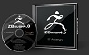
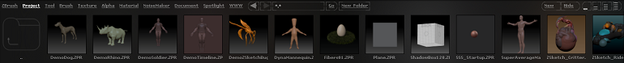
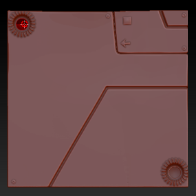
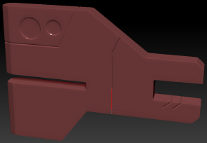
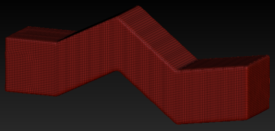
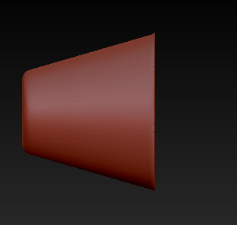
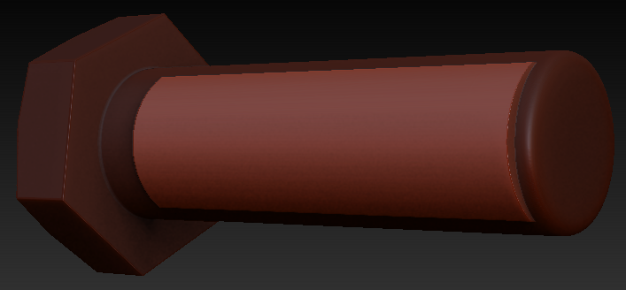
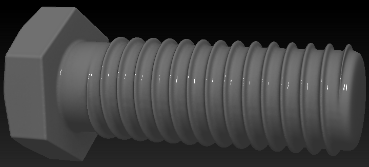
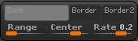

Apprenez la sculpture digitale avec Pixologic ZBrush
Vous désirez apprendre à utiliser le logiciel de sculpture numérique 3D le plus avancé et utilisé ?  > TéléchargerL'objectif ici est de vous montrer les outils et fonctionnalités dédiés à la sculpture par ordinateur. Tout comme le dessin, peu de techniques vous seront demandées, le respect des proportions (excepté pour le cartoon) et votre créativité primeront. Pixologic ZBrush vous permet de déformer des polygones 3D à la vitesse de votre imagination : il est possible pour les utilisateurs confirmés de créer un visage réaliste en quelques heures seulement ! ZBrush a été utilisé pour « Killzone 3 »
Certaines modélisations sont nettement plus rapides à obtenir dans ZBrush ; générer la base d'une créature organique peut se faire plus rapidement que dans Maya ou Blender. Il dispose d'outils vous permettant d'ajouter les plus fins détails simplement en creusant ou gonflant la matière (façon de synthétiser :p ).
ZBrush a servi dans « Gears of War 2 »Il est rapidement devenu le logiciel de référence en ce qui concerne la création de créatures organique et des textures qui l'accompagnent. La grande majorité des personnages de jeux vidéo et films en sont issus, inutiles donc de préciser qu'il est très fortement implanté dans le milieu professionnel (détails). Le logiciel commence à s'imposer dans les sculptures de type mécanique (robots, véhicules, objets divers) par la simplicité à laquelle les pièces et détails viennent s'y greffer.ZBrush a servi dans « Gears of War 2 »Il est rapidement devenu le logiciel de référence en ce qui concerne la création de créatures organique et des textures qui l'accompagnent. La grande majorité des personnages de jeux vidéo et films en sont issus, inutiles donc de préciser qu'il est très fortement implanté dans le milieu professionnel (détails). Le logiciel commence à s'imposer dans les sculptures de type mécanique (robots, véhicules, objets divers) par la simplicité à laquelle les pièces et détails viennent s'y greffer.
Qu'est-ce qui est prévu dans ce cours ?
Vous verrez ici les outils principaux qui font la force de ZBrush, vous devriez en 1-2 semaines les maitriser. J'ai prévu plusieurs vidéo de speed sculpts en organique et mécanique pour compléter le cours afin de quelque peu vous guider. Sachez tout de même que, comme pour le dessin, c'est la pratique qui vous fera progresser, je ne peux que vous apprendre l'utilisation des outils (vous présenter les différents crayons en gros ^^ ).
Note : pour suivre ce cours, je vous recommande fortement d'avoir à disposition une tablette graphique, j'explique son intérêt dans le premier chapitre.
ZBrush : abordable avec updates offertes, optimisé, innovant et réputé
Tout au long de ce tutoriel vous allez apprendre à manier les outils les plus populaires sous ZBrush (se prononce « zibreuch » pour les intimes :) ). Vous verrez, faire de la 3D est beaucoup plus simple qu'il n'y parait. Surtout que dans notre cas, pour de la sculpture, il n'y a presque aucun terme à apprendre, mais « juste » à pratiquer. Donc, disons que votre seule difficulté sera le bon maniement de la tablette graphique.
La tablette graphique, j'y viens. Je vous recommande fortement d'en posséder une ! (Oui monsieur, je mets un point d'exclamation tellement elle est indispensable. :p ) Je vais dès ce premier chapitre vous montrer l'avantage qu'elle apporte par rapport à la souris.
Ici, nous allons nous concentrer sur les possibilités apportées par ZBrush par rapport à un logiciel de 3D conventionnel. Pour les néophytes qui n'ont jamais touché à un logiciel de 3D de leur vie, j'ai prévu un dernier sous chapitre de remise à niveau. Je vous rappel que ce tutoriel part des bases et que n'importe qui peut le suivre. :)
Alors, à votre tablette souris... pour le moment ! :D
Il est difficile de parler des possibilités offertes par ZBrush, non pas parce qu'elles sont nombreuses et atypiques (bien que ça y contribue quelque peu), mais plutôt parce que le logiciel évolue extrêmement vite. Chaque nouvelle version est accompagnée d'une fournée d'outils en plus dont la plupart innovent ; les mises à jour, même mineures, peuvent carrément bouleverser vos habitudes prises sur le logiciel ! Vous pourrez vous faire votre propre avis en lisant les changelogs des différentes versions. Nous allons ici faire le tour des principales fonctionnalités de sculpture qui ont contribué à le rendre aujourd'hui indispensable aussi bien dans les studios 3D professionnels que chez les amateurs. :)
La modélisation polygonale
Cylindre avec peu de faces qui simule un modèle lisse
Entrons tout de suite dans le vif du sujet en abordant la modélisation (création de formes en 3D). Le premier mode cité dans le titre : la « modélisation polygonale » ne devrait pas être un mystère pour les amateurs. Son approche est assez technique et pourrait rebuter certains artistes (sans être difficile pour autant). On peut très bien s'en servir pour de l'infographie (images artistiques réalisées par ordinateur) que pour des créations plus rigoureuses et précises : dessin industriel, design et concepts avec dimensions bien précises. On a donc plus de contrôle sur le nombre de faces et leurs dispositions. Ça convient très bien à certains types de modélisations comme la modélisation d'intérieur, de véhicules en tout genre et de mise en scène pour une animation ou une image. On est quand même plus limité en détails : il est plus difficile d'ajouter des imperfections qu'en sculpture. On peut utiliser des algorithmes pour lisser des formes tout en continuant à travailler sur peu de faces, les angles sont durcis par l'ajout de faces comme sur l'image à droite. Il y a des outils à connaitre qui effectueront chacun une déformation unique de la modélisation. Ne vous étonnez pas de rencontrer ce genre de phrase sur les forums de 3D : « tu devrais ajouter des edges loops par ici », « tu devrais extruder, faire un bridge et merger cette partie »... On utilise des outils dédiés qu'à la déformation des composants, comprenez plutôt la déformation des faces, arêtes et sommets.
La sculpture
La sculpture n'est pas destinée aux « techniciens » (ne prenez pas le terme au premier degré hein ^^ ), elle est intuitive de base et ne demande pas d'apprendre à maitriser des outils aux noms tordus pour arriver à faire quelque chose de potable rapidement. On peut très facilement réaliser des personnages et créatures avec ou des pièces mécaniques, mais avec beaucoup moins de contrôle sur les dimensions, certains préféreront le polygonale pour ça. Par contre, on est beaucoup plus libre. On peut ajouter les moindres détails, la moindre ride ou rayure. Les quelques outils de bases dans ZBrush suffisent presque aux débutants voire même aux utilisateurs avancés. Pour expliquer grossièrement on part d'une forme de base appelée « Base Mesh » sur laquelle on ne va que déplacer les sommets de façon à créer du volume. Vous pourrez jouer sur le nombre de faces, donc par la même occasion sur le nombre de sommets de votre modèle, en le subdivisant et ainsi avoir plus de contrôle sur les détails. Il s'agit là d'une notion très importante que vous devez prendre en compte lorsque vous sculpterez : les subdivisions et la répartition des faces impacteront le niveau de détails. Toutes ces faces qui composent le mesh c'est ce qu'on appelle le maillage. Pour vous expliquer ça, j'ai pris un plan 2D de plus en plus subdivisé vers le bas. Les lignes noires que vous voyez sont les arêtes des faces et les intersections des sommets :
Il m'est impossible d'ajouter des détails sur la partie du haut, il n'y a pas assez de sommets.
Contrôler le niveau de détails avec la subdivision
Dans ZBrush on va commencer par chercher à obtenir rapidement la forme globale. On teste des concepts, c'est la phase de Sketching. Lors de cette étape on préfère ne garder que peu de faces, ça permet de se focaliser sur la forme générale, mais aussi, et ça vous le verrez plus tard avec la pratique, de la gérer plus facilement. Après, et ça dépend de se que vous avez choisi de faire, vous ajoutez les détails en organique par subdivision ou vous découperez votre modélisation en plusieurs pièces s'il s'agit d'une modélisation mécanique (hard surface modeling). Ce sont deux gros types de sculptures que nous verrons dans ce tutoriel, même dans cette première partie je vous montrerai les outils plus adaptés pour élaborer un base mesh organique et ceux pour le hard surface. ZBrush permet la sculpture « multi-resolution ». Alors que vous en êtes aux détails sur un modèle très subdivisé (qui contient beaucoup de faces donc), vous pouvez revenir à un niveau inférieur pour modifier la forme globale puis retourner au dernier niveau de subdivision et retrouver vos détails.
Des outils à utiliser selon la situation
Les outils ainsi que ZBrush lui-même sont développés par des artistes professionnels, ils se sont mis d'accord sur les paramètres qu'ils utilisent habituellement en les mettant en avant dans l'interface sous forme de presets (outils préconfigurés) ; on peut instantanément les utiliser pour avoir la forme désirée. C'est un peu comme dans le monde réel, on a différents types de crayons : les HB, crayons médium souvent utilisés pour les esquisses, H1 plus secs pour les contours, B2, crayons gras pour les ombres et la mise en relief, etc. On a des outils avec des tailles précises comme des pinceaux, des petits pinceaux pour les détails ou des rouleaux pour les applats de couleur. Ils ont été utilisés au fil du temps, éprouvés par les artistes qui se sont mis d'accord sur leur utilisation. Évidemment, il n'y a pas de codes prédéfinis, on peut aussi les utiliser quand ça nous chante et rien n'empêche les artistes de créer leurs propres outils pour rechercher un style propre et adapter leur plan de travail en conséquence. Et cela fait aussi partie de la force de ZBrush : la customisation des brosses virtuelles combinée à une interface modulable et dédiée à la sculpture.
Tablette graphique... ou rien !
Tablette graphique, se branche en USB sur votre PC La tablette graphique joue un rôle très important sur le comportement des brosses (que j'appellerai dorénavant par leur nom anglais « brushes »). J'ai même envie de dire qu'avec, le résultat sera tout autre. D'abord au niveau du tracé, vous manipulez un stylet (stylo magnétique) plutôt que la souris, ce qui vous permet de tracer plus facilement des courbes et droites. Son utilisation demande de l'entrainement (et des drivers installés :p ), si vous avez déjà la bonne gestuelle acquise par le dessin vous devriez très bien vous en sortir en sculpture. Je vous rassure, même ceux qui ne savent pas dessiner pourront sculpter sans le moindre problème ou gêne ! ;)
Outre la fluidité des tracés, la pression du stylet impact énormément l'épaisseur des traits. Pour comparer ça, j'ai tracé deux courbes dans un logiciel de dessin, une à gauche faites avec la souris et celle de droite au stylet :
On voit deux choses : l'arrondi de la courbe de droite est plus réussi et son épaisseur augmente petit à petit. En 3D ça change tout : plus la pression du stylet sera forte plus le gonflement de la matière sera important. Vous expliquer ça comme ça c'est pas évident, il suffit de tester on voit tout de suite la différence. ^^
Ah les dimensions, vous en avez sûrement entendu parler, mais de quoi s'agit-il exactement ? Beaucoup d'entre vous pensent savoir ce que c'est, mais les connaissez-vous vraiment toutes ?
Une seconde question : quelles dimensions gère ZBrush ? Et bien, toutes les dimensions existantes sont gérées par ZBrush, donc vous avez une partie de la réponse. ^^
Une dimension est une composante essentielle du monde réel, il a donc fallu les recréer virtuellement par ordinateur sans quoi rien ne pourrait être affiché sur votre écran. Nous vivons dans un monde constitué de pas moins de 4 dimensions (appelé par le diminutif 4D), beaucoup pensent que le monde n'en est constitué que de trois. Une erreur induite par les logiciels de 3D qui en général en gèrent quatre, mais se nomment ainsi. Nos yeux perçoivent donc quatre facteurs.
La première dimension (on aime leur donner un ordre et un nom pour s'en souvenir et les citer plus facilement) est l'horizontale et porte le joli nom X. Un axe allant de gauche à droite ou inversement, car il n'a pas de sens, permettant de bouger, mais aussi de voir dans ses deux directions. Avec un seul axe nous somme à 1 dimension, rien n'est visible avec, car on ne peut représenter une forme sans sa hauteur. Seul, il ne permet que de désigner une direction gauche / droite.
En ajoutant la deuxième dimension, tout devient beaucoup plus intéressant au niveau des possibilités. L'axe porte le nom de Y, la lettre de l'alphabet suivant X. Pour la troisième dimension, vous aurez deviné qu'il s'agit de Z. Pour la quatrième dimension c'est à part, vous comprendrez. :p Avec X et Y en plus de pouvoir bouger à gauche, à droite, en haut et en bas on peut afficher des formes planes, comme des cercles, des rectangles ou plus concrètement des dessins, des photos, des pages internet comme votre site préféré : le Site du Zéro. :D
Donc, la troisième, l'axe Z gère le dernier déplacement possible : la profondeur. Avec cette dernière les mouvements dans toutes les directions sont possibles, comme dans le monde réel. Dans un jeu vidéo à 3 dimensions, vous pourrez vous déplacer n'importe où.
Mais alors, si on peut déjà se mouvoir partout, qu'apporte la quatrième dimension ?
Vous êtes en plein dedans sans le savoir : il s'agit du temps, beaucoup l'oublie, celle-là. Sans lui le monde serait figé et vous ne pourriez pas suivre ce superbe tutoriel. :p C'est exactement pareil pour les logiciels de modélisation et de sculpture, on dit souvent qu'ils gèrent la 3D, car permettent de travailler avec les axes XYZ, on oublie souvent qu'on peut aussi y animer des personnages et objets en fonction du temps. On les appelle logiciel de 3D, car leur fonctionnalité la plus importante est la modélisation en 3D. L'animation est une étape facultative, on se contente bien souvent d'images en infographie et créer des poses avec les personnages pour montrer qu'ils sont actifs.
Vue en perspective et orthographic
Les axes XYZ peuvent avoir des comportements différents dans les logiciels de 3D. On peut avoir de la perspective comme dans le monde réel, les objets seront déformés avec la distance, comme quand vous regardez une route. Vous aurez l'impression qu'elle se rétrécit au loin. La vue orthographic (isométrique en français) est une vue où la distance n'affecte pas les tailles. On peut ainsi travailler plus facilement en vue de face, côté ou dessus et savoir si certains sommets sont bien alignés.
La deuxième dimension et demie (2.5D) : le pixol
Bienvenue dans la matrice ! La deuxième dimension et demie existe en informatique, les joueurs old school (qui jouent aux anciens jeux) peuvent me comprendre. Je dis ça pour me sentir moins seul. ^^ Les premiers jeux à simuler la 3D étaient conçus en 2.5D, les niveaux n'étaient faits qu'à partir de plans 2D dont certains éléments devaient être interprétés sous forme de murs et obstacles, donc avec une fausse 3D. Je cite par exemple « Doom » l'un des premiers jeux 2.5D au monde utilisant la technologie du « Binary Space Partitioning » (BSP). Les maps BSP avait pour gros inconvénient d'empêcher les développeurs de faire des ponts où couloir passant par-dessus un autre, car tout était mappé en 2D.
La 2.5D de ZBrush part un peu de cette optique tout en gérant des choses supplémentaires telles que la profondeur de façon plus poussée, les ombres, lumières ainsi que les matériaux. Pour vous expliquer un peu comment ça marche, voyons comment fonctionne une image sur ordinateur.
Image en pixels
Fonctionnement d'une image 2D en pixels
Le fonctionnement d'une image par ordinateur est très simple, on a une grille invisible dans laquelle chaque case affiche une couleur. Chaque case s'appelle pixel. Avec de nombreux pixels, on peut avoir n'importe quelle image, leur quantité représente la résolution, plus celle-ci sera élevée plus l'image sera nette, mais surtout détaillée. Une image en haute définition de résolution 1920*1080 (un standard), affiche 1920 pixels sur une ligne horizontale et 1080 à la verticale. Il y en a au total plusieurs millions en multipliant ces deux valeurs. C'est fou la technologie. :D Quand l'ordinateur affiche une image, il affecte une couleur par pixel, il sait grâce aux coordonnés X et Y (car nous sommes en 2D), quel pixel sur l'écran affichera telle ou telle couleur.
Une image 2.5D en pixols
La 2.5D de ZBrush est gérée par des pixols, leur technologie propriétaire, d'où l'éditeur PIXOLogic ou même ZBrush pour pinceau de profondeur (brush = pinceau, Z = le troisième axe gérant la profondeur). À la base le logiciel ne gérait pas la 3D, mais la 2.5D. C'est en quelque sorte la forme évoluée du pixel. Comme avec le pixel, on a toujours le critère de la résolution d'image. Dans ZBrush on parlera plutôt de résolution du document, car la scène peut accueillir dessins 2.5D et polygones 3D. Pendant le tracé on crée du relief, sauf qu’étant donné que nous sommes en 2.5D, nous ne pouvons tourner autour des pixols et voir ce qu'il y a derrière. Leur fonctionnement reste encore un mystère pour beaucoup d'utilisateurs. Comme de la magie, je ne vois que ça comme explication viable. :magicien: Un matériau (une brillance et éventuellement une texture plutôt qu'une couleur) peut être affecté au tracé. Des ombres sont créées au niveau des creux, on peut même déplacer la lumière virtuelle dans ZBrush pour agir sur leur orientation.
Nos pixols gèrent donc :
la profondeur;
la matière;
la lumière.
Dans la pratique on utilise la 2.5D pour la création de parois tel qu'un mur, une grotte, etc. On peut aussi s'en servir comme texture : faire de l'eau en pixols et exporter l'image en pixels pour la plaquer sur un plan et constituer une mer.
La 3D
Là pas de nouvelle dimension, on reste dans la 3D, mais nous allons voir deux façons dont elle est gérée. ZBrush intègre ces deux techniques et c'est pourquoi j'aimerais vous en parler.
La 3D vectorielle
La 3D de base est gérée par les coordonnées, le logiciel indique où se situent les sommets des faces par des valeurs XYZ. Les faces vont ensuite être remplies par de la matière. On a de cette façon peu d'informations, mais certaines zones peuvent être plus, même trop denses en face spar rapport à d'autres. C'est une chose qu'en sculpture on essaie d'éviter pour garder le contrôle sur les détails sur tout le modèle tout en optimisant les performances.
Zozor en Voxel
Les Voxels, une gestion de la 3D différente
Je vais une nouvelle fois m'appuyer sur les jeux vidéo pour mes explications, si ça peut aider. :p On pourrait imaginer des volumes 3D en Voxels un peu comme le monde cubique du jeu « Minecraft ». Le jeu permet de creuser ou d'ajouter de la matière n'importe où. Il n'est pas fait en voxels, se sont de vrais cubes polygonaux, mais ça se rapproche beaucoup du principe. Les voxels fonctionnent un peu comme ça. On a une résolution qui détermine le nombre de cubes donc la précision des détails et on peut parfois avoir des algorithmes pour lisser les cubes et avoir de vraies « pentes ».
Cette technologie disponible depuis bien longtemps dans ZBrush est passée dans la version 4r2 à l'étape supérieure avec l'arrivée du DynaMesh. Ce dernier permet de reconstruire la topologie en fonction de la résolution des voxels. Avec cet atout, nous pourrons trouer où nous le souhaitons ou souder deux polygones entre eux. On recrée donc l'enveloppe, celle-ci gardera plus où moins les détails selon la résolution des voxels. Pour éviter de perdre les détails à chaque nouvelle enveloppe, on désactive purement et simplement le mode voxel pour retourner à la 3D vectorielle basique où l'ont pourra utiliser la multi-résolution.
Cette fonctionnalité s'appelle DynaMesh, j'aurai l'occasion de vous la montrer plus en détails dans cette première partie. ;)
Vous n'imaginiez pas tout ça au sein d'un logiciel de sculpture, avouez ? :p Dans ZBrush on ne se limite pas qu'à travailler la matière, on crée le modèle de base, on crée de multiples pièces, on greffe leurs détails et les peint. On retrouve des fonctionnalités avancées des logiciels de modélisation comme la gestion de la brillance des matériaux ou la création d'un éclairage réaliste qui permet l'incrustation dans des décors. On peut même créer la chevelure de personnages, poils et fourrure dans ZBrush et coiffer à la tablette ! :D
ZBrush devient de plus en plus complet et malheureusement il reste encore trop méconnu par les débutants, alors que son utilisation est bien souvent indispensable. Il complètera sans problème votre logiciel de modélisation polygonale si vous faites déjà de la 3D. :)
Non seulement les fonctionnalités de ZBrush sont assez spéciales et innovantes, mais vous allez rapidement vous rendre compte que l'interface l'est tout autant. On ne va pas commencer de projet dans ce chapitre, mais plutôt télécharger le logiciel et voir ensemble l'interface pour que vous puissiez prendre vos premiers repères ; vous serez ainsi parés pour la suite de la première partie sur l'élaboration de base mesh. :)
J'ai décrit dans un chapitre annexe comment personnaliser l'interface, mais avant je vous recommande de garder celle par défaut pour que vous puissiez suivre le tuto plus facilement. ;)
Télécharger la démo de ZBrushBon OK, ZBrush est un logiciel propriétaire payant, il vous faut mettre la main au porte-monnaie pour avoir droit à une duré d'utilisation illimitée. Ne partez pas, au contraire et réjouissez-vous, Pixologic propose son logiciel à un prix très abordable par rapport à certains éditeurs de logiciel de 2D/3D dont je ne citerai pas les noms. Et jusqu'à maintenant, chaque nouvelle version a été gratuite (bien que ça puisse changer à l'avenir). Et comme je vous l'ai dit, les mises à jour peuvent trancher radicalement sur vos habitudes tellement elles sont complètes et innovantes. Ce n'est pas de la publicité que j'essaie de vous faire, je vous laisse juger de mes propos en consultant les tarifs des logiciels de 2D/3D propriétaire de la concurrence par rapport aux fonctionnalités et nouveautés proposées.
Pour le moment, prenez la version d'essai qui est utilisable durant 30 jours, voire réutilisable lorsque vous téléchargerez la démo d'une nouvelle version. Vous aurez de quoi bien découvrir le potentiel du logiciel pour vous décider.
J'ai regroupé dans ce tableau les deux versions existantes, la démo et la version illimitée en temps d'utilisation avec les mises à jour comprises :
la version complète peut être utilisée pour les projets commerciaux
*les nouvelles versions ont été gratuites jusqu'à maintenant, mais rien ne garantit que les futures le seront.
Quel config pour faire tourner ZBrush ?
Alors là une deuxième bonne nouvelle : un ordinateur qui a 10 ans avec un Intel Pentium IV peut faire tourner convenablement ZBrush ! Dans le tableau en dessous je présente la configuration minimale avec laquelle il faudra quand même ne pas viser trop haut au niveau des détails. La configuration recommandée vous permettra d'être beaucoup plus à l'aise et l'optimale est la meilleure configuration actuelle, qui vous permettra de réaliser n'importe quel détail.
Configuration optimale pour ZBrush 4r3
Configuration moyenne pour ZBrush 4r3
Configuration minimale pour ZBrush 4r3
Système d'exploitation : Windows 7 64 bit / Mac OS X Lion 64 bits Processeur : Intel Ivy Bridge (bon ventirad) Quantité de RAM : +8 Go (en dual channel) Écran : résolution 1920*1080 ou supérieur (couleurs 32 bits)
Système d'exploitation : Windows 7 64 bits / Mac OS X Lion 64 bits Processeur : Core 2 Duo, AMD Athlon 64 X2 ou plus récent Quantité de RAM : 6 Go Écran : résolution 1280x1024 ou supérieur (couleurs 32 bits)
Système d'exploitation : Windows Vista / Mac OS X 10.5 Processeur : Intel Pentium 4 ou AMD Athlon 64 (gestion des instructions SSE2) Quantité de RAM : 1 Go Écran : résolution 1024x768 (couleurs 32 bits)
Tablette graphique Wacom (format A5 min)
Tablette graphique Wacom (format A5 min)
The Minute Hardware
Pour ceux qui s'y connaissent un peu en composants informatiques, vous remarquerez que je ne mentionne nulle part la nécessité d'une carte graphique pour faire tourner ZBrush, alors que pourtant c'est un logiciel dédié à la 3D. Et c'est là tout le mystère de ZBrush, il est capable d'afficher des millions de faces uniquement par l'exploitation du processeur et de la RAM. Ça défie les lois de l'informatique. :p
Ça permet beaucoup de choses : le logiciel tourne sur d'anciennes configurations, mais aussi sans avoir à rechercher des pilotes graphiques, ce qui lui permet d'être parfaitement fonctionnel dès l'installation. En parlant de ça, je vous laisse vous débrouiller avec l'installation qui consiste à cliquer bêtement sur Next (suivant).
Alt + TabulationAllez, il est grand temps de lancer ZBrush ! Si vous passez par le menu démarrer, cliquez sur le menu Pixologic puis ZBrush. Attendez avant de l'exécuter, car le logiciel va apparaitre en plein écran (déjà ça ce n'est pas très ordinaire :p ). Pour revenir au tutoriel, cliquez sur le bouton Hide (cacher)
en haut à droite ou appuyez sur Alt + Tabulation (voir l'image de droite).
Voilà, lancez-le, vous arriverez sur cet écran :
L'interface de ZBrush 4r3
Un peu dépaysant par rapport aux applications que vous avez l'habitude de voir, n'est-ce pas ? :) L'ergonomie, même si elle ne parait pas parfaite au premier coup d'oeil, est en fait très efficace et entièrement dédiée à la sculpture et l'utilisation de la tablette.
Que dites-vous d'un bref tour de celle-ci ? Vous allez me dire que vous êtes là pour ça. :-° Alors pas de temps à perdre, explorons ses menus ou plutôt devrais-je dire palette. Vous allez comprendre pourquoi j'emploie ce terme.
L'interface décortiquée
1- Informations sur le logiciel
On trouve tout en haut des informations sur le logiciel, qui n'ont que très peu d'importance. Ça permet juste de vérifier si la dernière version est bien installée, car c'est parfois proposé sous forme de patch qui écrit des fichiers supplémentaires. L'autre information utile c'est la quantité de mémoire utilisée et libre. Surveillez cette valeur en particulier si vous avez un ordinateur ancien et peu puissant. Sur les ordinateurs récents, il y a peu de limites, vous n'avez pas vraiment besoin d'y faire attention.
2- Modifications globales de l'interface
On n'y va presque jamais, ou peut être juste au premier lancement pour changer les couleurs de ZBrush avec des thèmes déjà créés, mais ça s'arrête là. On peut aussi cacher les palettes pour n'utiliser que les raccourcis. Mais vu le peu de place qu'elles occupent à la base c'est inutile de les enlever.
Voilà donc la barre des palettes et non barres des menus, mais son utilisation est pratiquement la même que ses derniers. La différence ? Elles constituent l'ensemble de l'interface, sont transparentes, peuvent contenir des images interactives de tailles variées, sont détachables, se fixent sur les côtés de l'interface et peuvent apparaitre près du curseur en appuyant sur le raccourci correspondant à la palette. On retrouve tout ce qu'il y a de plus classique comme l'enregistrement, le chargement et différents paramètres. Sur l'image flottante à droite la démonstration de la palette Light qui comme vous pouvez le voir comporte beaucoup d'icônes et d'images.
4- Paramètres de la brush
On trouve en dessous de la barre des palettes différents paramètres sur l'utilisation des pinceaux. On changera ici leur taille et intensité, c'est-à-dire la force maximale par laquelle le volume sera gonflé ou creusé. Pour rappel la pression sur la tablette graphique permettra de jauger l'intensité, ça permet de ne pas revenir à chaque fois sur ce paramètre.
Si vous avez déjà touché à un logiciel de 3D les cases Move (déplacer l'objet), Rotate (orienter) et Scale (changer la taille) ne devraient pas vous être inconnues. Elles jouent exactement le même rôle : positionner les éléments de la scène. Nous verrons comment les utiliser dans le chapitre qui suit. ;)
En pointant la souris sur les paramètres d'une palette, parce qu'il s'agit d'une palette (ou plutôt de deux combinées : la Transform et Draw), vous pouvez voir pour certains paramètres le raccourci pour l'utiliser directement dans la scène :
5- La scène
Au centre c'est la scène 2D/2.5D/3D... elle permet d'afficher simultanément pixels, pixols, meshes 3D et les effets comme de la fourrure et d'y faire vos rendus et retouches. Vraiment polyvalente cette petite scène. :p
La création de mon avatar dans ZBrush :
C'est une fois le curseur de la souris dans la scène 3D que vous pourrez faire apparaitre les palettes ou un paramètre via leur raccourci correspondant. Par exemple la touche s fait apparaitre le paramètre size (taille) de la brush.
6- Type de brush
À gauche vous avez accès aux types de brushes ainsi qu'à leur comportement (motifs, dispersion, etc), on y trouve aussi les matériaux et le sélecteur de couleurs pour les phases de peinture.
7- Panneau de navigation
Juste à droite de la scène 3D, on a des icônes pour s'y déplacer. On utilisera plutôt les raccourcis, car il faudra très souvent réorienter la vue lorsque vous sculpterez. On se servira surtout de ce menu pour isoler un polygone ou rendre ceux qui l'entourent transparents pour ne pas être gêné.
8- Les contenaires
Ouvrir/fermer un contenaire
Les contenaires, ce sont les barres de rangement sur les côtés où seront placés les raccourcis des palettes, les orignales restent en haut. Le but des contenaires est de laisser les palettes ouvertes pour accéder plus rapidement à leurs paramètres. Vous pouvez en ouvrir plusieurs à la fois, attention à force elles risquent de devenir encombrantes. Vous pouvez en gardant le clic gauche enfoncé dans une zone vide les faire défiler vers le haut ou le bas en déplaçant la souris. Par défaut, dès l'ouverture de ZBrush, le contenaire de droite contient déjà la palette Tool au lancement et d'autres quand vous travaillerez sur des sculptures.
J'ai rédigé un chapitre annexe sur la personnalisation de l'interface. À nouveau, je vous recommande de ne pas y toucher pour le moment.
Un petit chapitre, pour vous montrer brièvement à quoi ressemble le logiciel. Comme vous pouvez le voir, l'interface n'est pas commune et ne ressemble pas à celles que vous avez l'habitude de voir avec les classiques menus et icônes. Avec un petit temps d'adaptation, vous verrez qu'elle sera bien efficace pour la sculpture et autres fonctionnalités. Nous aurons l'occasion de revenir plus en détail sur les différents éléments avec le principal contenu des palettes. Je vous laisse le soin de découvrir par vous-même toutes les options qu'elles renferment. ;)
Nous y sommes, nous allons pouvoir commencer à remplir la scène de ZBrush et à connecter la tablette graphique. :)
Contrairement à du dessin 2D ou 2.5D, en 3D vous devez partir d'une forme de base pour tout projet. On ne peut y faire autrement, car on ne fait que déformer de la matière et travailler sa forme et volume. Cette règle s'applique en modélisation polygonale et en sculpture comme j'ai pu vous le dire dans le tout premier chapitre de découverte. ZBrush présente l'avantage de pouvoir commencer sur une forme simpliste : cube, sphère, cylindre ou bien grâce à ses outils innovants de générer la base d'une forme organique ou mécanique qui ne demande plus qu'à y sculpter les détails.
Il faut quand même dès le début bien faire la différence entre le type de forme basique à disposition. On a les formes 2.5D en Pixols dont je vous ai parlé dans le premier chapitre. Les meshes 3D qui sont en quelque sorte les polygones basiques qui comprennent aussi les base meshes (forme basique d'un personnage ou créature généralement). Ils ont chacun des paramètres d'édition rapide permettant de modifier leur forme dans leur globalité. Dans tous les cas, ils ne sont pas sculptables jusqu'à se qu'ils soient convertis en PolyMesh 3D, dès lors leurs outils d'édition seront inaccessibles.
Ce n'est pas la sculpture que nous allons voir ici, nous allons plutôt voir ce que nous pouvons déjà faire avec les meshes 3D avant de les convertir en PolyMesh 3D sculptables. Aussi je vous apprendrai comment gérer un projet avec ZBrush en important des meshes 3D, gérer leurs paramètres et importer ou exporter des PolyMeshes vers d'autres logiciels de 3D. Et surtout comment convertir les meshes en PolyMeshes 3D afin de les rendre sculptables.
Dès le lancement de ZBrush, la création de meshes 3D est mise en avant et ça semble logique vu que tout projet part de là. Ne serait-ce qu'au-dessus de la scène vous êtes envahi par de multiples sphères multicolores. Il s'agit de PolyMeshes 3D donc de sphères directement prêtes à être sculptées qui ont chacune une couleur différente parce que c'est beau et ça fait joli. :p
La subdivision diffère également, une quantité de faces variables quoi (dernière fois que je vous donne la définition de subdivision :D ). Elles présentent surtout la particularité de fonctionner par défaut avec le mode DynaMesh, qui va reconstruire automatiquement le maillage pour préserver son homogénéité. M'enfin, je m'éloigne un peu du sujet nous verrons ça très bientôt, car j'en parle dans la première partie du tuto. ;)
Ce fameux menu présent au-dessus de la scène porte un nom : la LightBox. Dans la pratique vous en aurez recours pour accéder à des ressources supplémentaires comme des bases de personnages et créatures, des brushes aux fonctionnalités bien spécifiques regroupées par catégorie ou même et le plus important selon moi afficher les images d'internet ou du disque dur directement dans l'interface de ZBrush pour les utiliser en tant que texture ou référence pour sculpter. L'utilisation d'une ressource se fait par un simple double clic. Pour naviguer parmi elles, double cliquez sur les dossiers pour les ouvrir ou cliquez sur les catégories au-dessus. Pour faire défiler les ressources, cliquez et maintenez enfoncé le bouton de la souris en pointant une ressource de la lightbox et déplacez le curseur vers la gauche ou la droite.
Le dossier DemoProjects vous propose des modèles 3D
Pour retirer ce menu qui passe parfois par dessus la scène 3D, appuyez sur , ou cliquez sur le bouton LightBox.
La palette Tool
Sélection d'un Tool Néanmoins, pour commencer votre projet vous passerez la majorité du temps par la palette Tool (outil) présente dans le rail de droite. Cliquez sur le carré Tool avec le gros S orange qui indique que l'outil « Simple Brush » est sélectionné et qui permet de dessiner en pixols. La liste des polygones basiques apparaitra dans le tableau « 3D Meshes ». Vous pouvez voir qu'il contient un mesh assez spécial intitulé ZSphere. Ce dernier permettra de générer un base mesh, c'est le tool le plus utilisé en début de projet.
Lorsque vous aurez choisi quel 3D mesh créer, vous pourrez le placer dans la scène via un clic gauche dans celle-ci et choisir sa taille en maintenant le bouton enfoncé. Au départ le mesh apparaitra sous forme de pixols, donc en 2.5D. Pour l'avoir sous forme 3D, vous devez cliquer sur le gros bouton carré Edit au dessus de la scène, vous ne pouvez pas le rater. Comme je vous l'ai dit dans le chapitre précédent, un bon nombre de paramètres détiennent un raccourci associé visible en pointant la souris dessus. Pour Edit, il s'agit de la touche t. Quand le mode Edit est activé, lorsque vous cliquerez dans la scène vous ne placerez plus de pixols, mais tournerez autour du mesh 3D. Les précédents pixols que vous aviez tracé resteront toujours en arrière-plan, il vous faut nettoyer le fond avec le raccourci Ctrl + n. Le mesh 3D revient en état de pixols si vous désactivez le mode Edit, ça peut servir à conserver une vue en pixols en tant que référence d'un concept ou autre pour ensuite continuer à sculpter et finaliser le modèle sur un mesh 3D. Le mieux c'est d'appuyer sur Shift + s qui va faire un SnapShot pour laisser une version pixols dans la scène. Quand vous cliquerez dans la scène 3D après avoir désactivé le mode Edit, vous placerez le mesh avec ses dernières modifications et vous n'aurez qu'à remettre le mode Edit.
Naviguer et mode d'affichage de la scène 3D
Naviguer dans la scène 3D (navigation historique)
Bien qu'il y ait des boutons pour naviguer dans la scène 3D juste à droite, les raccourcis sont beaucoup plus efficaces puisque l'on a très souvent besoin de changer d'angle de vue. Ils sont un peu compliqués à exécuter au début, mais vous verrez qu'avec la pratique ils deviendront faciles à exécuter et qu'ils sont en fait efficaces et adaptés pour être utilisés avec la tablette graphique.
Pour tourner autour d'un objet 3D, cliquez gauche ou posez le stylet sur la tablette quand le curseur est dans la scène 3D à un endroit vide. Déplacez ensuite le curseur tout en maintenant le clic (laissez le stylet sur la tablette). Si vous faites la même chose, mais en pointant sur un PolyMesh, vous sculpterez ou ZBrush vous indiquera que le polygone n'est pas sculptable si c'est un mesh. Si le Mesh/PolyMesh prend toute la surface de l'écran, que le zoom est trop important et que vous n'avez aucune zone vide sur laquelle cliquer, vous pourrez toujours cliquer dans la zone grise tout autour de la scène, elle est faite pour ça et fonctionne pour tous les raccourcis de déplacement que nous allons voir.
Pour vous déplacer latéralement, faites un clic dans le vide comme toujours, et appuyez sur la touche Alt.
Pour le zoom ça se complique un peu. Vous aurez un peu de mal avec le raccourci au début, mais vous devriez le maitriser rapidement. Il faut appuyer sur Alt, faire un clic dans la scène, puis relâcher Alt tout en gardant le clic enfoncé. Ensuite, en déplaçant le curseur vous zoomerez.
À droite de la vue 3D vous trouverez les boutons de déplacement : Move, Scale et Rotate. Attention ! Le scale n'est pas une mise à l'échelle des polygones, ça correspond bien à un zoom.
Entrainez-vous aussi à enchainer les trois, commencez par vous déplacer autour de la scène 3D avec un clic, puis maintenez Alt pour bouger latéralement et relâcher ce dernier pour zoomer.
Vous pouvez utiliser la touche f pour faire un zoom au mieux, pour que votre sculpture prenne tout l'écran. Ce raccourci permet aussi de la retrouver au cas où elle ne serait plus visible dans la scène 3D.
Vous pouvez cranter ou magnétiser la vue avec la touche Shift, vous verrez qu'elle nous servira à cranter pas mal d'outils. En sculpture cela servira à tracer des lignes droites ou creuser ou gonfler sur une ligne horizontale, mais aussi pour d'autres outils. Dans la vue 3D, ça permet de tourner autour de l'objet tout en se positionnant parfaitement en face, sur le côté, le dessus, etc. Essayez de vous déplacer dans la scène tout en maintenant Shift.
Le mode d'affichage
Les modes d'affichage permettent parfois de mieux se repérer dans la scène 3D en rendant par exemple transparent un mesh qui en cache un autre. Par exemple rendre transparents les yeux pour mieux travailler les paupières avec le bouton Transp que nous reverrons, car il fonctionne que s'il y a plusieurs meshes/polymeshes.
Le mode d'affichage le plus basique est l'activation de la vue en perspective qui va prendre en compte la profondeur comme dans le monde réel, je vous recommande de l'utiliser seulement pour présenter vos sculptures et faire vos rendus. Pour l'activer, cliquez sur Persp à droite de la scène. Pour sculpter, vous comprendrez avec la pratique et l'utilisation de certains outils qu'il est préférable de la laisser désactiver, de rester en orthographic.
Vous pouvez afficher le maillage (les faces d'un polygone) avec le raccourci Shift + f.
Et enfin, pour afficher le « sol » vous avez un bouton floor. Ou plutôt ça fera apparaitre une grille sur laquelle vous pourrez projeter vos ombres aux pieds de votre personnage ou autre lors du rendu (génération de l'image finale).
Édition et conversion de Meshes en PolyMeshes sculptable
Préparer un futur PolyMesh
Éditer la forme d'une primitive 3D
Pendant que le mesh est en mode d'édition, cherchez dans le rail de droite la palette Initialize. Elle permet d'éditer rapidement la forme d'un mesh 3D. Les paramètres que vous trouverez sont propres au type de mesh (par exemple, avec un cube vous n'aurez pas autant de paramètres qu'avec un engrenage sur lequel on réglera la taille des dents et leur nombre).
Pour commencer, prenons le mesh le plus simple : Cube 3D. Dans Initialize on aura accès à X, Y et Z size qui correspondent aux réglages de l'échelle (proportion) selon un axe. La valeur est exprimée en pourcentage, celle par défaut de 100 est donc la valeur maximale, sauf que là on ne peut dépasser les 100 %... ce n'est pas vraiment un problème puisque des outils de ZBrush permettent d'agrandir les meshes sans passer par les palettes. :) En réduisant cette valeur sur un des trois axes, vous « écrasez » le cube. De cette manière, on peut passer d'un cube à un pavé (un rectangle en 3D).
D'autres paramètres sont accessibles dans la palette comme la modification du niveau de subdivision : HDivide et VDivide. Sur un cube ce ne sera pas bien perceptible. Vous devez passer en mode d'affichage des faces avec le raccourci Shift + f ou cliquer à droite de la scène sur le bouton PolyF (PolyFrame : afficher le maillage) pour les voir. Vous pouvez tester ces derniers paramètres sur une sphère ou un cylindre, là vous verrez la différence sans le mode PolyFrame, car selon le nombre de face l'arrondi sera moins anguleux et perceptible. Mais, de toute façon, quand vous passerez en mode PolyMesh, vous pourrez modifier le niveau de subdivision et comme il sera multirésolution vous pourrez à la volée revenir à une subdivision inférieure tout en gardant les détails.
Les paramètres Size et Divide de la palette Initialize se retrouvent sur à peu près tous les meshes, excepté pour les ZSpheres qui ont un fonctionnement différent permettant de créer des base mesh et Gears 3D (engrenage) qui contient beaucoup de paramètres spécifiques comme le nombre de dents et leur taille.
M'enfin, je ne vais pas passer trop de temps sur les détails des paramètres de Initialize, car à part le Size et la division de départ avec HDivide et VDivide, c'est tout ce qu'il faut savoir. Pour le reste, vous pouvez tester les paramètres, mais on les utilise très rarement et je ne souhaite pas vous embrouiller dès ce premier chapitre. ^^
Convertir un Mesh 3D en PolyMesh 3D
Pas grand-chose à dire, la technique est très simple : il suffit de cliquer sur « Make PolyMesh 3D ». Dès lors, Initialize disparaitra dans la palette Tool et la palette Geometry se complètera pour permettre de gérer les résolutions et fonctionnalités de sculpture.
Sauvegarde et export
Enregistrer, exporter ou importer un mesh
Enregistrer, sauvegarder ou exporterPour sauvegarder votre sculpture en cours, allez tout en haut de la palette Tool et cliquez sur « Save As », cela va sauvegarder le Tool au format .ZTL (ZTool). Pour le charger, allez sur « Load Tool ». Il y a autre chose à savoir : le format .ZTL est spécifique à ZBrush, aucun autre logiciel de 3D ne peut l'ouvrir. Pour que vous puissiez récupérer vos sculptures et base meshes dans un logiciel comme Blender ou Maya cliquez sur Export et choisissez le format .OBJ. Dans tous les logiciels de 3D, y compris ZBrush, pour ouvrir un .OBJ vous devrez utiliser la fonction Import.
Connecter ZBrush à un autre logiciel de 3D avec GoZ (GoZBrush)
La fonction GoZ va connecter ZBrush à un autre logiciel de 3D. À chaque fois que vous cliquerez sur le bouton GoZ votre modélisation sera exportée vers le logiciel connecté qui lui l'importera automatiquement. L'inverse aussi sera possible, le logiciel connecté pourra exporter avec le bouton GoZ apparu. Cette fonctionnalité est disponible pour Cinema4D, 3ds Max, Maya, Modo, Photoshop (Extended), Lightwave, DAZ|Studio, Carrara et bientôt Softimage (Blender n'est pas supporté). Pour activer GoZ, toujours dans la palette Tool, cliquez sur R à droite du bouton appelé Visible. Cela va nous permettre de paramétrer GoZ. ZBrush va vous demander si les logiciels de 3D qu'il cite sont installés ou non. Vous pouvez activer GoZ pour plusieurs logiciels à la fois. Si le logiciel n'est pas installé, cliquez sur « Not Installed! ».
Pour ma part j'ai installé GoZ pour Autodesk Maya, un onglet GoZBrush va apparaitre dans son interface avec le bouton GoZ. En utilisant ce bouton, j'exporterai la modélisation ou la mettrai à jour dans Zbrush et inversement. On gagne comme ça du temps, s'il faut le faire plusieurs fois, pas besoin d'exporter en .obj pour importer ensuite dans l'autre.
Qu'on ait des meshes, polymeshes, pixols ou tout autre élément physique dans la scène 3D on appelle ça un Tool. C'est d'ailleurs pour ça que nous sommes passés par la palette Tool pour accéder aux éléments que nous pouvons ajouter dans la scène. Un personnage contiendra plusieurs tools : le corps (sans les détails, car les vêtements les cachent), les vêtements, les dents, les yeux et divers objets s'il doit tenir quelque chose dans la main, par exemple. Réunis, les tools forment un tout, ils composent le personnage. On passe donc de l'objet de départ, le corps, à plusieurs sous-objets qui viennent le compléter. On traduit sous-objet par SubTools en anglais. Vous ne pouvez éditer qu'un seul SubTool à la fois, c'est-à-dire sculpter sur une seule partie de votre création.
Pour les gérer, il faut passer par la palette portant le même nom. Son utilisation n'est vraiment pas compliquée. Sa principale fonctionnalité est l'importation d'un Tool pour en faire un nouveau SubTool de la composition.
Utilisation de la palette SubTool
Nous allons pouvoir nous atteler à la tester. Les deux fonctions à retenir sont Append, qui sert à ajouter un nouveau SubTool, et Delete pour supprimer le SubTool en cours d'édition. En cliquant sur Append vous accéderez à un menu très similaire à celui de Tool, sauf que le 3D mesh importé sera directement converti en polymesh sculptable et visible dans la liste des SubTools. Si on était passé par la palette Tool, on aurait alors créé un nouveau mesh à part qui ne compose pas la modélisation. Heureusement, on peut le récupérer en faisant un append. Vous verrez les tools créés récemment pour en faire des SubTools. Attention quand même, à chaque redémarrage de ZBrush les tools créés ne seront plus visibles, il faut penser à sauvegarder si vous les sculptez à part.
Pour travailler sur un SubTool celui-ci doit être actif ; il faut qu'il soit sélectionné dans la palette SubTool. Un SubTool sélectionné est encadré en noir. Le plus simple reste de sélectionner directement dans la scène, plutôt que de s'embêter à le retrouver dans le menu, surtout si vous en avez plusieurs centaines. Imaginez un peu que vous ayez un SubTool pour chacune des dents de votre personnage ou créature. Vous n'aurez juste qu'à pointer le curseur sur la dent à sélectionner puis à presser le raccourci Alt + clic gauche.
Vous pouvez renommer un SubTool en cliquant dessus puis en cliquant plus bas sur le bouton Rename. Ça vous sera très utile, surtout que parfois ZBrush ne peut exporter votre modélisation, car certains SubTools portent le même nom.
Contexte d'utilisation
Création de vêtements avec les masques
Dans ZBrush, il y a une fonction pour masquer des parties d'un polymesh. Cette fonction sert à la base à geler des parties pour ne plus qu'elles soient sculptables. Pixologic a eu l'idée d'utiliser cette faculté pour en extraire un nouveau SubTool. Ca parait rien dit comme ça, mais ça deviendra très vite terriblement efficace ! On pourra masquer des parties d'un personnage pour lui créer des vêtements qui épouseront ses formes. Il ne restera plus qu'à sculpter les pliures des tissus pour les rendre plus réalistes et leur appliquer des textures adaptées. Nous utiliserons aussi cette fonctionnalité pour créer de nombreuses pièces mécaniques et accessoires qui nous serviront à créer des robots denses en composantes et en détail.
Pour masquer, ça se passe un peu comme si vous alliez sculpter... bon vous ne l'avez jamais fait. :p Il faut appuyer sur le bouton Ctrl et cliquer sur votre modélisation pour le faire. Les parties masquées seront alors noircies et gelées. Si vous cliquez dans le vide avec la touche Ctrl, cela tracera un rectangle de masque. J'en reparlerai dans le prochain chapitre.
Vous pouvez masquer de nouvelles zones ou les « démasquer » ( :ninja: ) ou plutôt dégeler avec les touche Ctrl et Alt en même temps. Alt nous servira à inverser l'action pour la majorité des outils (creuser au lieu de pousser lors des phases de sculpture).
Pour générer un SubTool à partir d'un masque, il n'y a qu'un bouton à presser Subtract (se traduit par soustraire, j'aurai plutôt dit ajout ^^ ). On retrouvera cette option dans la palette... devinez quoi : SubTool. :)
Et pour vous donner un exemple concret qui vous suivra à vie (oh oui ! :p ), nous allons créer un T-Shirt pour un personnage. Vous pourrez avec cette même technique réaliser tous les vêtements, pièces mécaniques et bases pour des accessoires.
Chargez un personnage dans la LightBox (touche , pour l'afficher si elle ne l'est pas déjà) dans le dossier DemoProjects. Utilisez la touche x pour activer la symétrie et tracer de chaque côté. Réalisez la silhouette d'un T-Shirt ou pantalon, gant, enfin ce que vous voulez sur le personnage.
Une fois fois la silhouette en place, cliquez sur Extract pour afficher la prévisualisation du SubTool. Vous pouvez changer d'angle de caméra pour enlever la prévisualisation et continuer à masquer des zones. À côté du bouton Extract, vous avez un paramètre Trick (épaisseur) juste à sa droite. N'y mettez que de petites valeurs. Une fois terminé, cliquez sur Accept.
J'ai rajouté quelques couleurs pour que le T-Shirt soit plus visible. Nous verrons les couleurs dans le premier TP sur la création d'un personnage ! :) Vous pouvez voir que le vêtement avec l'épaisseur à 0.01 (quand je vous disais de mettre des petites valeurs) que j'ai créé est coupé au niveau des bras alors que mon mask ne l'était pas. En fait, et je pense que vous l'aviez deviné, le vêtement rentre dans les bras. Ça arrive souvent, mais c'est rapide à arranger. Il faut utiliser les brushes de sculpture pour repousser ses parties vers l'extérieur. D'ailleurs, elles permettront également de sculpter des pliures, même si certains préfèrent les simuler à partir d'un moteur physique (j'explique ça dans la dernière partie de mon tutoriel Maya pour ceux auquel ça intéresse ;) ).
Gestion et placement du contenu
Ah je parle, je parle, faut dire que les SubTools sont vraiment importants, ça constitu et enrichi votre scène. :) Pour en revenir aux dents ou divers petits éléments avec les SubTools, vous vous posez probablement cette question :
Mais pourquoi s'embêter à faire un SubTool pour chaque dent, c'est une perte de temps, non ?
Ça peut être un petit peu long, enfin 5-10 minutes, car il suffit de dupliquer les SubTools avec l'option Duplicate qui copie celui en cours d'édition. Il ne reste ensuite plus qu'à placer la nouvelle dent. C'est à partir de là qu'on gagne du temps pour la suite. On peut placer plus facilement chacune des dents. Dans le cas contraire, on aurait tout le groupe de dents dans un seul SubTool, il faudrait alors, à partir d'un outil, « geler » les dents qui ne doivent pas se déplacer pour les bouger une par une. Après, ça dépendra des circonstances. Pour la dentition d'un humain, les dents sont rapprochées, vous n'avez qu'à faire semblant qu'il y ait plusieurs dents en creusant la séparation. Vous verrez qu'on peut de cette manière faire semblant d'avoir énormément d'objets. C'est très utilisé dans les modélisations mécaniques où on donne tout de suite l'impression d'avoir une grande quantité de pièces alors qu'on a seulement fait de fausses séparations. Pour un T-Rex par contre, où les dents sont écartées, là il est peut-être préférable de dupliquer les dents et d'en mettre une par SubTool pour faciliter leur placement.
Optimiser les performances grâce aux SubTools
On peut également faire autre chose bien utile avec les SubTools, on peut les isoler pour n'en voir qu'un dans la scène et travailler ses détails et aussi gagner en performances en cachant le reste. Ce dernier atout, je le recommande à ceux qui veulent sculpter avec un ordinateur pas super véloce. Pour montrer ou cacher un SubTool, cliquez sur le symbole représentant un oeil à droite de son nom. Si vous souhaitez cacher un SubTool qui est déjà sélectionné, donc encadré en noir, vous cacherez tous les SubTools existant sauf celui en cours d'édition qui restera visible tant qu'il sera actif. Vous pourrez à la fois gagner en performances, mais aussi le sculpter plus facilement sous tous les angles.
Quand vous aurez fini de travailler sur un SubTool, vous pourrez grâce au système multi-résolution le rabaisser à son niveau de subdivision minimum, les détails seront conservés tout comme les performances.
Nous avons des SubTools, mais il reste quelques choses essentielles à voir : leur positionnement. Les habitués vous diront : Move (déplacement), Scale (échelle) et Rotate (rotation). C'est exact, ce sont là trois termes anglais que même les plus anglophobes du monde doivent retenir impérativement s'ils veulent faire de la 3D. :p
Non en fait il y aura d'autres termes anglais, que j'introduirai doucement. Le but c'est qu'au final vous les reteniez tous. Ça ne peut vous être que bénéfique, car d'autres termes sont utilisés dans les autres logiciels de 3D. Même si dans ce tutoriel nous touchons à la sculpture, ZBrush a beaucoup avancé et on retrouve beaucoup de fonctionnalités des logiciels de modélisation polygonale... mais avec une utilisation toujours aussi spéciale et innovante (les deux mots qui caractérisent ZBrush quoi :D ). Et toujours en parlant de fonctionnalités spéciales et innovantes, l'outil que je vais vous présenter pour positionner vos meshes ne vous prouvera pas le contraire.
Dans ZBrush, les amateurs pourront peut-être perdre leurs habitudes au début pour positionner leurs objets. Il n'y a qu'un seul outil dans ZBrush et il ne change pas de forme, peu importe le mode de positionnement utilisé. Il se nomme TransPose. Vous verrez ensuite qu'il est tout à fait adapté pour positionner, mais aussi pour définir des poses pour vos personnages et créatures.
Move pour le déplacement
Voyons comment le mettre en place sur un polymesh. Nous allons l'utiliser avec le Move. Vous pouvez soit cliquer au-dessus de la scène 3D sur le bouton Move ou utiliser son raccourci la touche w. Je vous donnerai en conclusion du chapitre un moyen mnémotechnique pour retenir les raccourcis. ;)
Faites un clic gauche sur le mesh puis déplacez le curseur pour tracer une ligne, cette ligne est l'outil TransPose. Elle contient trois cercles, deux aux extrémités de la ligne et un au centre. Pour l'instant, ça ne ressemble à rien surtout que si vous passez en mode Scale ou rotate, TransPose ne bouge pas : vous avez toujours ces trois cercles.
En mode Move, seul le cercle du milieu sert réellement. Les deux autres on s'en servira pour les autres modes, car pour l'instant ils ne font que déformer n'importe comment le mesh. En cliquant sur le cercle au milieu en gardant le bouton enfoncé tout en déplaçant le curseur, le polymesh suivra vos déplacements. Pour vous déplacer dans une direction bien précise, dans la direction de la ligne TransPose, maintenez Shift pendant que vous déplacez le polymesh.
Vous pouvez aussi utiliser la touche Shift lors du placement de l'outil TransPose, pour cranter sous forme verticale, horizontale ou un certain angle oblique. Pour seulement déplacer l'outil TransPose, cliquez à l'extérieur d'un des cercles.
Scale pour l'échelle (la taille)
Pour le scale (touche e) on va utiliser les cercles aux extrémités de TranPose. Si vous étirez la ligne, vous agrandissez l'échelle du polymesh et dans le cas contraire vous la réduisez. Avec le cercle du milieu, on élargit ou écrase le mesh dans le sens perpendiculaire à la ligne TransPose. Vous ne vous en servirez presque jamais de celui-ci.
Rotate pour l'orientation
Enfin la troisième et dernière opération, la rotation, est accessible avec le raccourci r et va permettre d'orienter le polymesh. Et c'est surtout avec cette opération que l'outil TransPose prend tout son sens (pardonnez le jeu de mots :p ). En déplaçant le cercle à une extrémité de la ligne TransPose, l'autre cercle deviendra l'axe de rotation un peu à la manière d'un compas.
Pour faire bouger le bras d'un personnage, on a juste à placer le premier cercle au niveau de l'épaule et le dernier à celui de la main pour ensuite orienter le bras en gardant l'épaule en tant qu'axe de rotation. On l'utilise un peu à la manière d'un os. Attention, il faudra penser à créer un masque sans quoi vous orienterez la sculpture dans son intégralité. Vous pouvez créer un masque automatiquement pendant le placement de TransPose en maintenant Ctrl. Au départ ça parait rebutant, mais ça demande un peu d'entrainement et on aura l'occasion de s'y prêter dans le chapitre qui arrive tout de suite sur la création de base meshes de créatures grâce aux ZSpheres. Vous pourrez vous entrainer à leur donner des poses. :D
Quand vous ne souhaiterez plus utiliser TransPose, que vous ne voudrez plus positionner votre polygone, activez le bouton Draw (touche q). C'est le mode par défaut qui permet de tracer des tools en pixols, de placer un SubTool ou de sculpter/peindre sur des polymeshes.
En résumé
On en a vu des choses ici ! Retenez surtout les raccourcis pour utiliser l'outil Transpose. Voici un moyen mnémotechnique : pensez aux claviers anglais QWERTY :
Q : draw (dessiner). L'outil agit différemment en fonction du tool choisi. Vous pouvez placer des meshes, dessiner en 2.5D et si vous êtes sur un polymesh le mode draw permet de sculpter.
W : move (déplacement)
E : scale (échelle)
R : rotate (rotation)
T : edit
Pour vous déplacer dans la vue 3D, retenez ces trois raccourcis :
clic gauche (stylet sur la tablette) : rotation de la vue
Alt + clic gauche : déplacement latéral
Alt + clic gauche puis Alt relâché : zoom
La scène de ZBrush est composée de tools : pixols (dessins 2.5D), meshes (formes non-sculptables) ou encore les polymeshes (formes sculptables). Les tools peuvent être utilisés comme contenaire et avoir plusieurs objets qui les composent : on les appelle les SubTools pour sous-objets.
Faites bien la différence entre les meshes et les polygones de base (ou base meshes non-sculptables) qui doivent être convertis en polymesh pour devenir sculptables.
Partir d'un mesh basique de type cube, cylindre, sphère ou autre n'est pas toujours évident pour réaliser un personnage. On appelle ça le box modeling, car on créé une forme basique avec souvent des angles droits. Pourtant, figurez-vous qu'on les utilise dans les logiciels de modélisation polygonale. ZBrush permet de réaliser des base meshes facilement et en un éclair et de multiples façons. Certains se servent de ce logiciel juste pour ça, c'est vous dire !
Les ZSpheres que vous aviez seulement aperçu dans la palette Tool sont dédiées à cette tâche. Il ne s'agit pas de simples sphères ; elles sont interconnectées et génèrent de la matière entre elles. On va pouvoir de cette manière représenter la silhouette de créatures en tous genres !
Dessiner un concept rapide avec Quick Sketch ou PaintStop
Dessiner un concept rapide avec Quick Sketch ou PaintStop
Avant de se lancer dans la création d'un base mesh, il faut parfois élaborer un concept ou encore dessiner un modèle ou une silhouette à suivre, dans les cas où vous ne souhaiteriez pas partir de quelque chose d'existant (Google est votre ami pour ça ^^ ). Cette image de référence s'appelle en anglais Blueprint, donc ne vous étonnez pas de lire ce mot sur les forums.
Dans l'hypothèse où vous inventez quelque chose, vous n'êtes pas obligé de commencer par du dessin. Vous pouvez travailler le concept directement avec les ZSpheres et ensuite la sculpture. On trouve pas mal d'inspiration tellement l'obtention de formes est rapide. Il ne faut donc pas hésiter à tester différentes formes. ^^
Si vous ne savez pas dessiner, laissez tomber cette étape ou bien dessinez seulement les contours. C'est assez radical oui, mais ça ne vous empêchera pas d'être inventif tout en sculptant.
Il y a deux façons de dessiner dans ZBrush : sur un plan avec des outils spéciaux simulant des pinceaux et par un plug-in entièrement dédié, digne de concurrencer Photoshop (je parle pour le dessin, pas la retouche et la composition d'images).
Dessiner une silhouette rapide avec QuickSketch
La première technique de dessin sur un plan peut se faire directement en cliquant au-dessus sur le bouton QuickSketch. Le fond de la scène deviendra blanc. En fait, cela chargera un polymesh d'un plan blanc avec un outil de dessin appelé Pen_Shadow que vous voyez dans le carré à gauche. Si vous tournez la vue en cliquant en dehors de la scène vous verrez le plan. Vous pouvez dessiner, même si ça reste assez spécial. C'est vraiment pour faire quelque chose de rapide. Pour un vrai sketch voir un artwork, il vaut mieux passer par le plug-in fourni avec ZBrush.
Pour quitter QuickSketch, ça se fait de la même manière que pour enlever un polymesh de la scène. Il faut enlever le mode d'édition (touche t), vous aurez alors des pixols. Vous n'aurez plus qu'à les effacer comme nous avons vu dans le chapitre précédent avec Ctrl + n. N'hésitez pas à sélectionner un autre Tool, sinon vous remettrez en place le plan pour dessiner. :p
PaintStop
ZBrush est doté d'un plug-in très puissant permettant de le transformer en véritable logiciel de dessin très complet permettant même de réaliser illustrations et artworks ! :D
Depuis ZBrush 4r2, tous les plug-ins sont inclus avec. La majorité se trouve dans la palette ZPlugin. PaintStop fait exception, il est situé dans Document -> PaintStop. Cela va charger toute une interface, n'oubliez pas de cacher la LightBox (touche ,) pour ne pas qu'elle vous gêne.
ZBrushop CS5
Ça garde un peu une disposition similaire à l'interface de base de ZBrush : on trouve en haut les paramètres du document comme la sauvegarde, des brushes dont le Draw Size (qui est probablement le seul paramètre important) qui a le même raccourci et la touche s pour changer la taille de la brush. À gauche, la couleur et le type d'outil de dessin. À droite les options de zoom ou le bouton Exit pour revenir à l'interface dédiée à la sculpture et reprendre votre modélisation.
Pour revenir aux options à gauche, ce sont en fait des catégories. Pencil regroupera différents types de crayons, Erase pour la gomme ou du blanc, Watercolor sont les pinceaux avec de la peinture et beaucoup d'eau (on s'en sert le plus souvent pour colorer rapidement sans effacer les tracés pour conserver les contours). En cliquant sur la flèche près de la catégorie, vous aurez différents types d'outils. Celui sélectionné pour chaque catégorie est grisé. Par défaut, dans Pencil c'est le crayon HB, celui qu'on utilise pour écrire ou faire des brouillons. Les tracés ne sont pas trop marqués et se gomment facilement, c'est donc un bon outil pour des sketchs. Pour refermer le menu, vous sélectionnez un outil ou vous cliquez sur la croix en dessous.
Vous pouvez dessiner plusieurs vues de votre personnage, voire avec la perspective si vous vous débrouillez. Mêmes différentes poses et humeurs, mais là il vous faudra être vraiment bon en dessin. Rien ne vous empêche d'utiliser ZBrush pour apprendre le dessin numérique. ;)
Comme je suis un peu plus à l'aise avec les pièces mécaniques (pour ne pas dire vraiment nul en dessin de personnages :p ), j'ai essayé avec mon modeste niveau de dessinateur du dimanche de réaliser une sorte de canard/T-Rex robot muni d'un bras canon en vue de côté. Je l'ai réalisé à partir du crayon HB :
Ne rigolez pas euh ! :p
Il ne faut pas hésiter à repasser plusieurs fois sur un même trait : c'est plus facile de réaliser des formes et courbes et ça permet de modifier les formes. Vous pouvez aussi utiliser la gomme pour revoir toute une partie, ce n'est qu'un brouillon, je vous le rappelle. ^^
Ensuite vient la finalisation : repasser les traits proprement. Et comme pendant la phase de sculpture, on a aussi des idées pendant qu'on repasse son brouillon, on peut donc changer quelques formes et ajouter des détails. C'est en retravaillant que vous vous direz « ah tiens, cette pièce, objet ou portion du personnage que j'ai dessiné est bizarre, ça ne rend pas très bien et c'est mal intégré. » Idem lors de la sculpture 3D, il faut s'assurer que tout est cohérent avec le design général.
Pour repasser par dessus votre brouillon, il est préférable d'utiliser les calques. Ça existe pour ça d'ailleurs. Vous avez à gauche les boutons Top et Base. Base c'est le support, le calque par défaut, celui qui contient le brouillon et pour Top vous avez compris. ^^
On va passer par le calque Top, vous pouvez aussi cliquer sur l'oeil juste à gauche pour cacher un calque et rendre invisible les dessins que vous avez fait dedans. Notez que le calque actif ne peut être caché. Quand vous aurez fini de repasser tout votre modèle, vous pourrez cacher le calque Base.Voilà ce que ça donne pour mon dessin, j'en ai profité pour ajouter des détails. Comme c'est mécanique, je peux ajouter des points de soudure, vis, etc.
Là je n'ai pas trop d'idées sur les couleurs et mon modèle de base me suffit. Je préfère voir ce que ça donnera directement sur le modèle 3D avec les reflets métalliques et tous les effets. J'aurai un meilleur aperçu. En cours de route, on peut au final changer pas mal de choses, également en fonction des critiques et suggestions des autres. Le dessin donne juste des idées de base. Je vous conseille de fréquenter des forums avec des utilisateurs expérimentés comme polyloop.net, un forum français pour avoir de nombreux conseils et apprendre des techniques. La communauté ZBrush est pour le moment réduite sur le Site du Zéro et peu d'utilisateurs confirmés se trouvent sur le forum. Vous avez aussi ZBrushCentral si vous êtes à l'aise en anglais, le forum officiel de ZBrush. Vous y trouverez une masse d'artistes talentueux, dont certains ayant travaillé dans les jeux vidéo et films d'animation ! :)
Et pour sauvegarder, cliquez sur File (Fichier), à gauche des paramètres de la brush, puis Save (sauvegarder). Ça enregistrera un fichier .zpp, un format spécifique à PaintStop. Pour enregistrer en .jpg ou autre, faites File -> Export Image.
Les ZSpheres vont permettre de créer une armature de base pour ensuite la sculpter. L'outil est très facile à utiliser. Ce sont juste des sphères reliées entrent elle que l'ont crée et place. Une simple touche permettra de générer un mesh à partir d'elles, qu'on pourra alors convertir en polymesh pour sculpter notre créature obtenue. L'outil est rapide : en 5-10 minutes montre en main vous aurez un base mesh complet ! :)
Voici un exemple d'un personnage obtenu très rapidement avec les ZSpheres (voir en dessous). On utilise les ZSpheres pour réaliser les formes de base. Vous pouvez voir que les oreilles sont assez épaisses. Normal, nous n'avions à disposition que des sphères pour créer le base mesh. Mais ça se corrige assez facilement. Regardez surtout la tête et à quel point elle est basique. Elle n'est composée que d'une sphère, il n'y a pas de visage. Je vous disais que vous n'avez pas besoin d'aller loin dans les détails, ce n'est qu'une armature que l'ont crée. Pour les mains, par contre, j'ai voulu dès le départ mettre en place les doigts, je gagne du temps avec les ZSpheres parce que c'est relativement simple à faire et ça m'évitera d'avoir plus tard à étirer des faces pour les faire.
Quand nos ZSpheres seront en place, ZBrush va créer un maillage sculptable. On ajoute des détails et couleurs. Par exemple, j'ai pu sculpter la tête malgré la simple sphère de départ. Les yeux sont dans des SubTools à part et les dents ne sont en fait qu'un seul SubTool. Je vous apprendrai la technique quand nous verrons le DynaMesh.
->
->
Fonctionnement
Une ZSphere est un Tool. Il se place de la même façon que ceux que nous avions vu dans le chapitre précédent. On le sélectionne dans la palette Tool pour ensuite le placer dans la scène avec un clic gauche. À partir du moment où vous entrerez en mode édition (touche t), vous pourrez connecter de nouvelles ZSpheres à celle mise en place. Sinon... bah vous tracerez des pixols. :p
On utilise généralement la première ZSphere pour représenter le buste pour ensuite y connecter les bras avec la symétrie active, les jambes et la tête. La symétrie s'active avec la touche x. Pour vérifier si la symétrie est bien activée, vous verrez un petit cercle apparaitre de l'autre côté de la sphère quand vous passerez le curseur par-dessus. Vous pouvez aussi n'avoir qu'un cercle pointant le curseur sur l'axe de symétrie.
Avec un clic gauche vous placerez la nouvelle ZSphere, ou plutôt devrais-je dire les deux nouvelles ZSpheres si la symétrie est active et que vous n'êtes pas sur l'axe. ^^ Ne relâchez pas le bouton gauche. Si vous déplacez la souris vous pouvez modifier la taille de la nouvelle ZSphere, l'autre par symétrie réagira de la même manière. Ensuite, avec le Move Tool, il vous sera alors possible de gérer leur éloignement. Elles resteront attachées à la ZSphere de base. Mettez le Draw Size de la brush à 1, ça évitera d'en déplacer plusieurs à la fois si elles sont rapprochées. Le principe de création est le même pour les ZSpheres suivantes : la ou les nouvelles seront attachées à la ZSphere qui a servi de point de création.
Vous n'avez pas encore vu le plus intéressant, pressez la touche a pour voir ! Les ZSpheres se transforment en un mesh 3D qui, si vous avez bien suivi le cours, sera sculptable en le convertissant en PolyMesh 3D. Par contre, aussitôt converti, vous ne pourrez plus revenir en mode ZSphere. Là, comme nous avons toujours un mesh, en réappuyant sur a, on peut rééditer les ZSpheres. De cette manière, on peut prévisualiser le résultat.
Il arrive que vous fassiez une ZSphere énorme à sa création ou avec un scale (attention à ce qu'elle ne chevauche pas les autres), mais qui en version de prévisualisation du mesh ne donne pas un truc si gros que ça. C'est donc à vous de spammer la touche a au début pour voir ce que ça donne. Avec l'habitude vous saurez à peu près le résultat sans même prévisualiser. ^^
Pour les supprimer, vous devez être en mode Draw et appuyer Alt + clic gauche sur celle concernée, l'autre en symétrie se supprimera également. Vous pouvez en supprimer une placée entre deux. Vous n'êtes donc pas obligés de le faire aux extrémités. En parlant de ZSpheres entre deux, vous pouvez en placer directement au niveau de la jonction, elle gardera une taille proportionnelle pour ne rien déformer.
Un peu de pratique
Un personnage cartoon (Mario)
Création de la forme généraleJ'ai choisi la création d'un personnage cartoon. J'aurais très bien pu en faire un réaliste, mais je trouve que cartoon c'est mieux pour commencer. Il n'y aura pas vraiment de proportions à respecter. Quand on travaille en ZSpheres, on ne fait que tracer la forme de base comme je vous l'ai montré dans l'exemple d'avant. Pour un humain, on n’aura pas forcément besoin d'avoir des oreilles à la création. On peut à la limite mettre une ZSphere là où elles seront situées pour avoir plus de faces pour les sculpter. Dans les versions récentes de ZBrush ce n'est plus un problème avec la retopologie automatique du DynaMesh et la possilité de souder des polymeshes entre eux, en faisant les oreilles à part.
Pour faire Mario en ZSpheres, j'ai commencé par la tête sur laquelle j'ai placé une ZSphere en son centre pour le nez. J'ai placé une petite ZSphere intermédiaire pour mieux marquer le nez et ne pas simplement tirer la tête vers l'avant. J'ai tracé un petit cou puis le torse avec une assez grosse ZSphere. À celle-ci j'ai fixé les bras et jambes par des formes très basiques, ce ne sont que des cylindres, et enfin les pieds.
Ajout des doigtsPour les doigts ça se complique un peu, mais alors qu'un tout petit peu. J'ai employé la technique de la ZSphere intermédiaire, c'est-à-dire que j'ai créé la base du doigt et son extrémité. Avec le Move, j'oriente l'extrémité. Il faut faire attention à ne pas toucher à la longueur du doigt. Je crée ensuite une ZSphere entre les deux que je déplace pour faire la pliure. Attention aux nombres d'articulations, les doigts en ont deux et le pouce une seule. Mario lui n'a qu'une articulation pour chaque doigt et c'est généralement comme ça pour du cartoon pour les animer plus facilement. J'ai voulu lui faire que quatre doigts, c'est courant pour des personnages cartoon vu que ceux si sont souvent gros et ça rend mieux d'en faire moins. ^^
Vous pouvez voir en dessous le résultat obtenu avec le maillage généré avec la touche a. Comme vous pouvez le voir, les mains sont beaucoup plus denses en polygones que la tête qui pourtant demandera peut être un peu plus de détails. Tout cela sera facile à régler avec le DynaMesh. ;)
Bon, je vous ai ici montré rapidement le cas des mains, nous allons nous concentrer dessus pour une main réaliste.
It's me Mario!
1- Une main réaliste
Le Majeur est en place
Pour faciliter la création de base meshes, la première ZSphere est souvent celle où vont se fixer les autres. On crée de cette manière une hiérarchie. Il faut imaginer que la première sera la paume de la main. Je vous vois venir : « mais on n’aura pas quelque chose de plat », ça se corrige, on est bien dans un logiciel de sculpture, non ? Ça ne prendra que quelques secondes à aplanir. ^^
J'ai placé la base et l'extrémité d'un doigt avec une ZSphere plus petite, comme le doigt est placé au centre on va dire que c'est le majeur, aucun doigt ne doit être plus long que celui-ci. Faites ensuite la même chose pour les trois autres doigts (oui je sais compter). Le pouce est spécial à faire, nous verrons ça juste après. C'est toujours la même technique, la base, une extrémité plus petite et une attention sur la longueur.
Attention aux longueurs des doigts
Pour le pouce on va placer une base, mais vraiment une grosse base pour essayer en même temps de créer du volume de ce côté de la main. Appuyez sur a pour voir se que ça donne et faire des ajustements. Ensuite il n'y a plus qu'à tracer une ZSphere à l'extrémité et une intermédiaire pour contrôler ça taille.
On a les doigts situés autour de la paume
Vous pouvez faire l'avant-bras si vous voulez.
En convertissant la main en maillage polygonal, vous pourrez voir qu'au niveau de la paume c'est vraiment gonflé, ou plutôt sphérisé à cause de l'outil. Avec un anti-inflammatoire les brushes, vous pourrez en un rien de temps l'aplanir et même creuser les zones d'articulations des doigts. En parlant de séparation, voyons comment mettre en place les articulations des doigts pour les plier. Décidément, vous êtes bien gâté dans ce premier chapitre de pratique. ^^
2- Les articulations des doigts
Articulations par ZSpheres intermédiaires Avant de placer les articulations, réglez bien la longueur des doigts et l'échelle des ZSpheres qui impacteront sur leur épaisseur. C'est plus facile à gérer quand nous n'avons pas les ZSpheres intermédiaires. Vous pouvez soit commencer par orienter les doigts et placer ensuite les pliures, soit les laisser tendus pour vous faire une meilleure idée des proportions lors du placement des articulations en ZSpheres. Dans les deux cas, faites attention à bien les placer, la première articulation est légèremement plus éloignée de la base que l'autre par rapport à l'extrémité.
Doigts fléchisC'est déjà pas mal et on a une excellente base. Vous comprenez pourquoi je vous disais que les ZSpheres justifient à elles seules de passer sous ZBrush ou de l'utiliser au moins une fois au cours d'un projet. En quelques secondes, j'ai pu marquer les pliures et aplanir la paume avec les brushes de sculpture.
Faire un Append de ZSpheres
1- Création d'un câble

Mise en place de la première ZSphere Avec les ZSpheres, c'est bien beau, on peut faire nos base meshes organiques et les sculpter, mais les formes générées via cet outil se prêtent aussi à la réalisation de certains accessoires dans la mesure où vous aurez besoin de pièces de forme cylindriques ou d'objets nécessitant de certaines courbes. Les ZSpheres font partie de la liste des meshes 3D. Celà veut dire qu'on peut importer l'outil en tant que SubTool (sous-objet) pour ajouter des « accessoires » à notre sculpture. Pour la démonstration, je vais vous montrer comment ajouter un câble sur une sculpture mécanique que j'ai réalisé pour l'occasion. Vous pouvez vous entrainer avec un polygone de base, je vous expliquerai comment j'ai fait dans le chapitre qui suit sur les outils de base de sculpture. ;)
J'ai réalisé un support mécanique. Vous ne savez peut être pas comment faire, mais focalisez-vous surtout sur ce que je vais faire avec les ZSpheres. Le Hard Surface Modeling je vous l'expliquerai et vous ferai un TP pour bien maitriser les techniques (la mienne n'est pas universelle hein ;) ). Donc, pour vous expliquer un peu ce que j'ai fait pour la pièce qui va accueillir le câble, j'ai pris un mesh 3D d'un cube, j'ai modifié un peu sa forme en changeant sa profondeur dans la palette Initialize qu'on avait vue dans le chapitre précédent. Après, comme vous vous en doutez, je l'ai converti en PolyMesh puis j'ai ajouté avec les brushes de sculptures toutes sortes de décorations, mais surtout deux réceptacles par lequel passera le câble. J'ai donc ma pièce maitresse, le support. Il faut maintenant que je passe par la palette SubTool et que je fasse un Append, c'est-à-dire intégrer un nouveau mesh à la composition actuelle. Je pourrai de cette façon ajouter n'importe quoi (dans notre cas un cable, mais j'aurais bien pu intégrer un bouton ou tout autre objet).
Câble en contact avec la surfaceAprès avoir fait un Append de la ZSphere, on observe déjà une première chose, et ça arrive souvent : on ne voit pas le mesh dans la scène. C'est normal, il se trouve au centre de la scène 3D et étant donné que mon support l'est aussi, il le cache. ^^ Vous n'avez alors qu'à activer le mode d'affichage Transparent à droite de la scène en cliquant sur Transp ou cacher le support en cliquant sur le symbole de l'oeil près du SubTool. On positionne alors la ZSphere par rapport à la sculpture, n'oubliez pas de la sélectionner depuis la palette des SubTools ou en cliquant dessus si vous y arrivez avec un Alt + clic gauche pendant que le mode Draw est activé.
Il faut que la ZSphere prenne le même rayon que l'orifice ou plus petit si plusieurs câbles doivent y passer. Comme je vous l'avais dit en astuce au début du chapitre, pour faire un câble le plus simple est de placer la ZSphere de l'extrémité avec la même taille puis placer les ZSpheres intermédiaires pour lui donner forme. Pour rappel, vous devez créer une nouvelle ZSphere et pendant sa création appuyer sur Shift pour copier la taille de celle sur laquelle elle est placée. Déplacez l'extrémité jusqu'à l'autre orifice et faites en sorte d'avoir la même profondeur. Pour ça, regardez le support en vue de côté pour faire en sorte que le câble soit à peu près parallèle à la surface. Vous pouvez créer une nouvelle ZSphere à chaque extrémité pour surélever le câble, pour qu'il soit en contact avec la surface plane du support. Donnez aussi une forme à votre câble, bien qu'il puisse tout à fait rester rigide.
Mise en forme
Si la surface est à la verticale, prenez en compte la gravité qui tire le câble vers le bas. Une fois terminé, vous n'aurez qu'à faire « Make PolyMesh 3D », oui on sculpte aussi sur les câbles surtout que là les angles sont trop perceptibles. Et là vous allez me dire : j'ai converti mon câble en polymesh, mais je ne vois plus les précédents SubTools, mon support compris, pourquoi ?
Après avoir fait un Append, si le SubTool d'origine comme le support était un polymesh, tous les nouveaux meshes importés se convertiront automatiquement en polymeshes. Par exemple, j'ai le polymesh d'un cube, j'importe dans la palette SubTool une sphère et elle sera directement convertie en polymesh. Vous ne pourrez pas passer par la palette Initialize. Pourquoi ça fonctionne comme ça ? Parce que ZBrush considère que tout ce que vous ajoutez à la composition est prêt à être sculpté. Dans le cas où vous auriez besoin de passer par la palette Intialize, vous passerez par la palette Tool pour créer l'objet en dehors de la composition puis vous rouvrirez votre composition toujours dans Tool et Mesh. Tous vos objets créés depuis l'ouverture de ZBrush apparaissent dans le sélectionneur. Ensuite vous pourrez faire un Append.
Pour les ZSpheres, c'était un peu différent. On avait besoin de faire un Append pour les placer par rapport à notre sculpture actuelle à moins que vous ayez une superbe mémoire visuelle. :p Elles ont besoin d'être des meshes pour fonctionner et créer leurs formes, donc ZBrush les garde non-sculptables. Après chaque conversion, il va créer le polymesh hors de la composition. Il vous faut donc faire un Append du câble sculptable. Vous vous retrouverez logiquement avec deux câbles identique dans la scène, l'un sculptable et l'autre éditable. Vous pouvez soit supprimer la version éditable soit la cacher si vous avez besoin de revenir sur sa forme. Pour reconnaitre la version polymesh, vous verrez PM3D_ écrit devant son nom.
2- Un maintien pour le câble
On n'est pas limité. On peut faire des appends de nouvelles ZSpheres, même sans avoir converti les précédentes en polymeshes. Vous pourrez de cette façon les combiner. Voilà par exemple un maintien pour le câble que j'ai réalisé à partir de nouvelles ZSpheres, donc de nouveaux SubTools :) :
Utiliser SpotLight pour avoir des images de références
Choisir une image de référence
QuickSketch, PaintStop, ZSpheres et maintenant SpotLight, en voilà des mots exotiques à retenir pour ce chapitre. Faut savoir qu'il fait exception, c'est la première fois que vous pratiquez, ensuite il n'y aura plus beaucoup de vocabulaire à apprendre. ;)
Spotlight est une fonctionnalité surtout destinée à texturer vos modèles 3D en chargeant une image visible dans la scène via laquelle vous pourrez projeter les couleurs et/ou détails sur votre sculpture. Une texture de peau permettra de peindre les personnages et tout de suite de les rendre beaucoup plus réalistes.
Là, nous n'allons pas utiliser SpotLight pour ces fins, donc pas à son plein potentiel. Nous allons surtout nous en servir pour afficher une image dans la scène et nous en servir comme modèle afin de créer un base mesh à partir d'elle. Vous pourrez continuer à utiliser l'image pour vous aider pendant la sculpture. Nous allons essayer de reproduire la base d'un personnage à partir d'une image, ce qui est déjà pas mal pour un début. ^^ Ça va aussi me permettre de bien vous montrer que base mesh ça signifie bien : « forme de base avec peu de faces et sans les détails ». Vous pourrez y sculpter tout ce que vous voudrez après, en supposant que vous n'ayez pas des faces placées n'importe comment à réajuster. :p
Pour l'exemple, nous pouvons nous servir de blueprints (plans, guides). Vous en trouverez plein sur www.the-blueprints.com, mais presque exclusivement des véhicules. Pour des personnages, recherchez des artworks sur Google Image ou vos sketchs/artworks faits sur PaintStop. Quand on a de la chance, on peut trouver des personnages sous plusieurs vues ou bien de face ou côté. C'est le cas pour le personnage Mario, je me suis d'ailleurs servi de l'image pour le faire en ZSpheres plus haut. Ce sera en quelque sorte ici son Making of. :p En plus, nous aurons comme ça un personnage cartoon, vous serez plus apte à le sculpter, car il n'y a pas de contraintes au niveau des proportions et les détails sont faibles. Une bonne création ne se compte pas par le niveau de détail de toute façon. ^^
Quand vous prenez un personnage d'un artwork, découpez l'image pour enlever les décors et surtout les autres personnages présents sur l'image, ils ne feront que l'encombrer.
Voilà l'image de Mario que j'ai utilisée. Prenez un autre personnage si vous voulez. Dans tous les cas, enregistrez votre blueprint sur le disque dur pour pouvoir l'ouvrir dans ZBrush. Vous avez aussi la possibilité de charger des images directement depuis internet, ce qui est utile pour texturer comme nous le verrons.
Charger une image dans SpotLight
Nous allons voir comment la charger dans SpotLight et la positionner et régler sa taille dans la scène. Nous verrons plus en détails SpotLight dans la partie 2 sur le texturing. Cliquez sur le carré « Texture off » à gauche de l'interface ou allez dans la palette Texturing en haut, vous le trouverez également là. Rappelez-vous que dans ZBrush, les gros carrés sont toujours des menus de sélection qui proposent des outils, alphas ou textures et affichent ce qui est en cours d'utilisation. Cliquez sur le carré, ZBrush vous proposera quelques textures dont la plupart sont générées par ordinateur. Cliquez en dessous sur Import. Chargez votre image et le menu va se refermer. Rouvrez-le et sélectionnez votre image pour en faire la texture active, elle apparaitra alors dans le carré.
Il ne reste plus qu'à charger la texture en cours dans SpotLight. Dans la palette Texture, vous verrez plus bas une icône avec ceci d'écrit : +/-. Elle permet d'ajouter la texture en cours à SpotLight et On/Off de l'activer (voir l'image flottante à droite). Cliquez sur les deux en commençant logiquement par +/- pour ajouter la texture. Normalement vous devriez vous retrouver avec Mario dans la scène avec plein de symboles d'une civilisation disparue. Je ne sais pas vous, mais l'outil me fait vachement penser à la porte des éloiles dans StarGate. :lol:
Gardez enfoncé le clic sur l'image dans la scène pour la positionner. Et enfin, car nous n'allons voir que deux possibilités de SpotLight pour l'instant, cliquez sur le symbole représentant deux carrés. Il se trouve vers le haut du cercle. Gardez le clic enfoncé et faites le tourner, cela changera la taille de l'image. Quand je vous disais que ça me fesait penser à un film. ^^
Dès que vous relâcherez le clic, le cercle reviendra à sa rotation initiale, vous pouvez comme ça mémoriser l'emplacement des paramètres. Le scale (la taille) se trouvera toujours en haut. ;)
Le fonctionnement de SpotLight c'est surtout ça : on positionne une image et utilisons les symboles pour effectuer des modifications. À chaque fois qu'on pointe la souris sur un symbole (bon OK j'arrête avec ça : c'est une icône :D ), vous verrez son nom apparaitre au centre du cercle. Si vous comprenez bien l'anglais ou avez déjà utilisé des logiciels de dessin, vous devriez comprendre le nom des fonctions. Tous les outils s'utilisent en faisant tourner le cercle. Les valeurs varieront en fonction de l'orientation. C'est vraiment bien pensé ce menu gyroscopique. ^^
Pour l'instant vous ne pouvez que toucher à l'image et ne pouvez rien faire dans la scène 3D. Il vous faut appuyer sur z pour passer de la sculpture à l'image de SpotLight. Pour savoir lequel est actif, regardez si le cercle est visible ou non. S'il l'est, SpotLight est actif et inversement. Vous pouvez aussi mettre sur On ou Off Spotlight à tout moment (l'image restera chargée) dans la palette texture ou avec le raccourcie Shift + z. Vous voyez, c'est facile à retenir : z pour passer du mode SpotLight à la scène ou l'inverse et Shift + z pour activer ou désactiver Spotlight et rendre invisible l'image.
Créer son base mesh par rapport à la référence
Je suis de bonne humeur contrairement à d'habitude, et pour ça, je vais vous montrer un autre paramètre pour SpotLight. J'avoue que c'est plutôt dur de se repérer sans passer par ce paramètre. Vous l'avez peut être deviné, il s'agit de l'opacité (pour les néophytes, le taux de transparence si on veut). ^^ Vous trouverez l'icône vers le haut droit du cercle. Cette fois-ci une portion de cercle orange vous montrera le pourcentage de l'opacité. Si le cercle fait un tour complet, vous avez une opacité de 100 %, un demi-cercle pour 50 %, etc. Un système bien pensé par les développeurs. :)
Une fois l'opacité réglée, qu'est-ce qu'il nous reste à faire ? Bah le plus gros : retourner dans la scène 3D avec le raccourcie z et à sélectionner le Tool ZSphere.
Voilà comment j'ai procédé pour faire la base de Mario... J'ai placé la première ZSphere pour le ventre, avec un scale pour régler le bide, faut bien qu'il stocke tous ces champignons pour régler la taille de la ZSphere. :p J'en ajoute aussi pour les jambes. Pour ça j'oriente la vue pour m'aider à les positionner, ensuite je retourne en vue de face, mais bien de face avec la touche Shift pour aligner avec le blueprint. Je fais attention à ce que le ventre soit bien placé par rapport à l'image pour positionner les jambes et faire un scale si besoin. Et ainsi de suite, je place les bras, le cou et la tête.
Entrainez-vous comme ça à faire des base meshes de vos personnages préférés. En plus, vous aurez des bases sur lesquels sculpter par la suite. Et ça tombe bien puisque nous allons attaquer la sculpture dans le chapitre suivant. :)
En résumé
Vous avez pu voir la puissance des ZSpheres et la vitesse avec laquelle on peut obtenir un base mesh prêt à être sculpté. Vous avez aussi pu voir comment créer des accessoires et câbles avec la fonction Append de la palette Subtool.
Quand vous créez un base mesh, ne vous attardez pas sur les détails. Nul besoin d'ajouter beaucoup de ZSpheres pour avoir un volume plus précis, les outils de sculpture sont là pour ça et on a parfois de nouvelles idées allant jusqu'à modifier la forme générale. Certains volumes comme par exemple de la paume de la main sont plus rapides et simples à obtenir avec les brushes de sculpture qu'avec des ZSpheres. Gardez ça en tête quand vous n'aurez pas toujours la forme désirée. ;)
Retenez les raccourcis pour activer ou désactiver la symétrie : la touche x et la touche a pour afficher le maillage généré via les ZSpheres.
La fonctionnalité SpotLight, à la base destinée à texturer ou ajouter des détails, pourra nous servir comme modèle via la représentation de l'image par dessus le scène 3D. Je reviendrai plus en détails sur son fonctionnement dans la partie 2 où nous attaquerons le texturing.
On va pouvoir se tourner sur les principales notions à avoir en sculpture et toucher à d'autres fonctions génératrices de base meshes.
Vous connaissez les bases de ZBrush. Vous savez créer un projet, gérer son contenu via les SubTools et générer des Base Meshes sculptable après conversion en PolyMesh. Il reste maintenant le plus gros et intéressant à voir : la sculpture ! :D Dans ce premier chapitre qui lui est dédié, nous allons explorer l'outil le plus important de tous : la brush de sculpture (le pinceau). Ou les brushes car il y en a plusieurs. Je vous montrerai les possibilités et paramètres importants qu'elles détiennent afin de changer leur comportement et leur appliquer des motifs.
J'essayerai de vous donner quelques astuces, vous ne serez pas obligé de les appliquer à la lettre, elles ne sont pas universelles. Je vais tenter de vous expliquer quand subdiviser, comment gérer votre sculpture multirésolution, les brushes à utiliser selon la densité du maillage, pour un certain type de détail et comment les marquer. Autant dire qu'on entre dans le concret et que ce chapitre est extrêmement important (et le plus fun :) ).
Je finirai par vous montrer la fonction principale des masques (masks en anglais), que nous avions vu rapidement pour générer un T-Shirt par extraction souvenez-vous. Cette fois il nous servira à geler des parties pour ne plus les rendre sculptables.
Les brushes, ZBrush en tire son nom. Faut dire que c'est l'outil de sculpture indispensable, mais en plus on en a toute une floppé pour travailler le volume de nombreuses façons possibles. À force de pratiquer, vous aurez vos préférences, ça dépendra de votre style et du feeling que vous aurez avec. Je vous recommande d'ailleurs de faire un tour dans le chapitre annexe sur la personnalisation de l'interface, j'explique comment mettre des palettes dans les contenaires, mais surtout comment créer vos palettes et affecter des raccourcis. Vous gagnerez du temps pour les sélectionner, plutôt que d'avoir à chaque fois à passer par les menus juste pour parfois n'utiliser que deux brushes.
L'utilisation des brushes se fait par étape, certaines étant plus adaptées pour certaines résolutions. La move brush sera efficace pour tirer les faces quand il y en a peu, c'est ce qu'on appelle travailler en « Low Poly ». On pourra revoir la curvature du modèle, gonfler des zones ou encore rétrécir des parties. Avec trop de faces, en « High Poly », tout ce que vous arriverez à faire c'est bosseler le modèle et créer des imperfections... après si c'est voulu pourquoi pas, vous êtes libres. ;)
Pour sculpter et tracer avec la brush active, il suffit d'avoir un PolyMesh et de cliquer avec le stylet dessus, comme si vous dessiniez sur un papier. :)
Des brushes de tous types
Il y a beaucoup de brushes, mais la majorité sont préfabriquées à partir de quelques-unes uniques, auxquelles le type de tracé, les motifs, et certaines options ont été modifiées. À chaque nouvelle version de ZBrush, de nouvelles font leurs apparitions dans le sélecteur (« Quick Pick » en anglais), d'autres sont déplacées dans la LightBox. Au moins, vous saurez que si une de vos brushes préférées n'est plus visible dans le Quick Pick, elle se retrouvera dans la LightBox. Généralement les plus utilisées ne sont pas déplacées.
On n'a pas seulement des brushes pour tirer ou pousser qui, elles, existent aussi en nombreuses versions : bosses arrondies, dur avec angles droits, gonfler à la manière d'un ballon, etc. Il y en a pour d'autres utilisations. L'une des brushes les plus connues est le Smooth ou adoucissement. Elle va comme son nom l'indique enlever les surfaces bosselées et les rendre plus lisses, mais aussi servir à corriger des zones où les faces sont trop étirées en atténuant la déformation. Cet outil est un Modifier (mot anglais, se traduit littéralement par modificateur), un outil avec un comportement spécial. Un Modifier dans ZBrush a une touche qui lui est dédiée Ctrl pour les masques, Shift pour le smooth qu'il faudra maintenir lors du tracé. Vous verrez qu'il en existe un autre que nous verrons plus tard. Suivez ce cours si vous voulez savoir. :D
On trouve aussi des brushes qui sculptent, mais de manière beaucoup plus plane comme le Clay Brush, qui crée un léger volume tout en aplatissant en même temps. Vous verrez que ça la rend adéquate à la modélisation de personnages, car on obtient quelques choses d'assez lisses, comme de la peau. D'autres vont pincer, gonfler ou creuser de façons très fines, afin de créer des rides, des fausses séparations de pièces mécaniques et d'autres détails spécifiques. Sans oublier les brushs de finitions. Il y avait le smooth pour l'organique, par exemple, et d'autres comme le hPolish dédiées à aplanir et créer des angles durs, pour donner un côté métallique ou même un style cartoon anguleux.
Il y a aussi d'autres brushes, mais elles sont un peu à part, elles ne permettent pas vraiment de sculpter. Certaines génèrent des surfaces à partir d'un tracé, ou encore d'autres servent à coiffer des cheveux et poils. Oui ça fait un peu bazar dans le même menu, mais avec la sélection rapide des brushes on ne s'en soucis pas. C'est d'ailleurs ce que nous allons voir tout de suite. :)
Sélection rapide des brushes
Les brushes, je pense que vous avez remarqué comment y accéder, elles sont en effet en haut à gauche de l'interface. Elle est représentée par une sphère sur laquelle on voit l'impact de la brush sélectionné. Ce que vous voyez depuis l'interface c'est la brush active, par défaut la brush Standard, c'est son nom. En pressant Shift, la brush active devient le smooth, vous pouvez voir que la sphère change. Après un clic sur la brush active, vous pourrez en sélectionner une autre. On peut changer la brush Standard, mais aussi la smooth en maintenant Shift tout en allant dans le menu. Je vous conseille de laisser le Modifier smooth, cette brush est indispensable en sculpture.
Vous pouvez voir qu'il y en a pas mal, on s'y perd un peu au début, mais au moins le logiciel est bien fourni. ^^
Les icônes aident pas mal à se repérer, à savoir quel sera l'impact de tel ou tel brosse sur la sculpture. En fait, en regardant de plus près, il n'y a pas tant de brosses que ça dans ce menu. Je veux dire, elles ne servent pas toutes à sculpter. Certaines insèrent des polygones ou même, chose qui n'a rien à voir, à coiffer cheveux et poils. Alors oui c'est mélangé, ça nuie quelque peu à la lisibilité... ou plutôt aurait pu nuire. Dans les versions récentes de ZBrush, on peut sélectionner une brush à partir de raccourcis. Ils sont plus simples à apprendre et à utiliser. Déjà parce que vous n'utiliserez pas toutes les brushes de ZBrush ou certaines occasionnellement, mais seulement quelques-unes lors de la sculpture. Aussi parce qu'il n'y a pas une touche du clavier pour chacune des brushes, voilà comment ça marche : par exemple si je veux sélectionner la brush ClayBuildup (très populaire), j'ouvre le menu des brushes (je peux d'ailleurs appuyer sur b pour le faire apparaitre sous le curseur) et je presse sur le clavier la première lettre du nom de la brush c. Pour ça j'avoue qu'il faudra connaitre le nom des brushes, mais à force de les utiliser vous les retiendrez. ;)
À partir de ce moment, ZBrush ne m'affiche que les brushes ayant pour initiale la lettre « C » et me proposera alors de taper une seconde lettre pour choisir parmi les brushes restantes. Pour le ClayBuildup, il m'indique de presser la touche b, cela sélectionnera la brush et fermera le menu. Vous pouvez noter ce raccourci sur un papier et essayer de le retenir pour sélectionner la brush rapidement. Pour résumer, j'appuie sur b pour ouvrir le menu (raccourcie qui ne change jamais), puis c pour la brush et b qui m'est proposé (b > c > b).
Pour certaines brushes, vous n'aurez besoin que d'un seul raccourci pour les sélectionner, tout simplement parce qu'aucune autre n'a la même initiale. La hPolish en fait partie, c'est la seule à commencer par cette lettre, en appuyant sur h avec le menu d'ouvert elle sera sélectionnée directement. Ça tombe encore mieux quand il s'agit d'un outil que vous utilisez souvent. ;)
Vous trouverez aussi beaucoup d'autres brushes dans la LightBox, celles absentes dans le Quick Pick. Elles sont classées par catégories, et il doit y en avoir à vu d'oeil plusieurs centaines ! Certaines sont très spécifiques et plutôt marrantes à utiliser comme celle qui sculpt des écailles de poisson que vous trouverez dans la catégorie Scales puis ScalesFish. Il vous faut double-cliquer sur une brush pour la sélectionner, tout se sélectionne de cette façon dans la LightBox.
Utiliser et régler une brush
Taille et intensité
Comme vous venez de le voir, il y a une large gamme de presets accessibles, vous trouverez sûrement une brush répondant à vos besoins sans avoir à la régler. Mais là je parle des réglages poussés. Le seul réglage important est la taille de la brush qui impactera également sur son intensité. L'intensité, c'est la force que la brush applique sur la sculpture pour pousser ou tirer la matière. On peut aussi changer l'intensité indépendamment dans le menu au dessus de la vue 3D, mais la tablette permet déjà de la gérer selon la pression que vous exercerez avec le stylet sur votre tablette. La taille aussi est dynamique et change selon la pression. En fait, les valeurs que vous entrerez seront celles appliquées quand la pression sera maximale. Avec une pression de 50 %, la taille et l'intensité seront réduites de moitié. Vous aurez de cette manière que très peu besoin de revenir sur les paramètres.
J'avoue que ce n'est pas très intuitif au début de connaitre la pression maximale qu'on peut exercer. Il y a une limite, vous n'avez pas besoin d'appuyer comme un malade allant jusqu'à rayer la tablette ou abimer la pointe du stylet. :p
Vous n'aurez de cette manière pas besoin de revenir à chaque fois sur les paramètres. Quand on sculpte, on ne touche presque jamais à l'intensité, on la gère avec le stylet, par contre on change la taille en fonction des détails qu'on souhaite y ajouter.
Les paramètres sont globaux, ils ne changent pas d'une brush à l'autre. Il arrivera quand même que certaines soient plus larges que d'autres et couvrent une plus grande zone. Retenez les raccourcis pour changer les paramètres : pour le size c'est facile, c'est l'initiale, la touche s; Pour l'intensité c'est u, gardez-le en tête même si on s'en sert moins souvent en pratique, ça peut toujours servir. ;)
Tirer ou pousser avec Zadd et Zsub
On a deux actions possibles : tirer ou pousser le volume gérable via les paramètres au dessus, Zadd (ajouter) et Zsub (enlever).
Zadd est très souvent activé par défaut, il va ajouter de la matière, du volume. Zsub va avoir l'effet inverse. Plutôt que de passer constamment par ces deux menus, on peut appuyer sur la touche Alt pour effectuer l'action inverse. La majorité des brushes sont configurées avec Zadd préactivé. Donc, Alt permettra le plus souvent de creuser lors des tracés.
Les brushes qui ont le Zsub préactivé sont souvent pointues et sont dédié à couper un peu à la manière d'un couteau, comme la dam_standard brush très utilisée pour créer des fausses séparations de pièces mécaniques. Ces genres de brushes sont moins adaptées pour tirer la matière à cause de leur effet « pincé ».
Les principales brushes à retenir et ajouts d'yeux aux personnages
Les brushes que je vais vous présenter ici sont les principales à retenir, les plus souvent utilisése. Je vous montrerai dans quelles circonstances les choisir, en fonction d'un type de détail ou du niveau de subdivision. Bien sûr, vous aurez peut-être vos préférences, on peut très bien utiliser des brushes dédiées à la modélisation mécanique pour créer des personnages anguleux et avoir son propre style. C'est ce qui fait l'originalité de chacune des créations et qui les rendent intéressantes à s'approprier et étudier. On apprend beaucoup en regardant les créations des autres.
Je vous montrerai aussi comment ajouter des yeux à votre sculpture organique. Ça n'y parait pas, mais ça donne tout de suite une expression à votre visage et vous aide à réaliser les détails et savoir où vous allez.
Les brushes pour la forme générale
La Move Brush
Pour régler la forme générale, vous serez le plus souvent en low poly, de cette manière, vous éviterez de bosseler votre sculpture. L'un des outils les plus utilisés en début de projet et qu'on utilise dans les logiciels de modélisation polygonale est l'outil Move. On saisit des sommets, la zone est gérée en fonction de la taille de brush, pour ensuite les positionner. Partant d'une sphère low poly, rien qu'avec le Move Tool je peux lui donner la forme d'un crâne :
Ce à quoi vous devez faire particulièrement attention avec cet outil et durant cette phase, ce sont les étirements des faces provoqués par le déplacement de leurs sommets. Certains préfèreront pour y pallier un peu utiliser la Move Elastic Brush, bien qu'un peu moins précise par moment pour définir certaines formes. Rien ne vous empêche d'alterner entre les deux. ;)
Bien marquer les volumes avec ClayTubes et/ou ClayBuildup
Certains préférons travailler la forme générale avec la Standard Brush qui est la brush de sculpture par défaut. Je trouve personnellement que ce n'est pas la plus adaptée. Les bosses ne sont pas assez contrastées pour définir la forme générale et les quelques détails que vous essayerez de tracer disparaitrons en subdivisant, ça lissera le modèle. Il vaut mieux exagérer un peu les formes à coup de ClayTubes qui a un tracé carré avec une élévation bien marquée. Ou encore la ClayBuildup qui va créer des couches supplémentaires en repassant la brush par-dessus le tracé. Je reviendrais sur l'intérêt de bien marquer les volumes dans le sous chapitre juste après, où vous verrez l'effet de la subdivision.
Même après subdivision, ces deux outils restent intéressants, on peut sculpter et marquer les volumes, puis procéder à un léger smooth pour adoucir les bosses et atténuer le volume.
Aussi (ça en fait des avantages pour ces deux brushes ^^ ), elles sont très efficaces lors des phases de sketching, de recherche. À la fois pour des créatures organiques que pour des pièces mécaniques par les formes cubiques et planes qu'elles permettent de réaliser. Il y a juste ensuite à extraire des SubTools à partir de masques pour créer des pièces, puis les affiner et polir. Si vous maniez bien cette brush en organique vous devriez bien vous en servir pour du hard surface et inversement. ^^
Les brushes après subdivision
Pour subdiviser il faut appuyer sur le bouton Divide de la palette Geometry ou utiliser le raccourci Ctrl + d. En déplaçant le slider SDiv (niveau de subdivision, voir l'image à droite), vous retournez au niveau de subdivision antérieure tout en conservant les détails de la subdivision la plus élevée. Vous pouvez aussi passer par le raccourci Shift + d pour passer au niveau de subdivision en dessous ou d seul pour l'inverse. Ces deux raccourcis permettent de naviguer entre les niveaux de subdivisions, ils n'en créent donc pas de nouveaux.
On continu avec ClayTubes et/ou ClayBuildup
Comme je l'ai dit plus haut, même après subdivision on peut continuer à les utiliser pour marquer des formes et faire apparaitre encore plus de détails. Surtout pour du cartoon caricatural ou des modélisations mécaniques où là vous n'avez presque pas besoin d'utiliser le smooth, juste à bien marquer les différentes pièces. À force de les utiliser sans trop de smooth cela commencera à se bosseler, mais c'est tant mieux, vous garderez comme ça détails et séparations en augmentant le niveau de subdivision pour passer au peaufinage.
Le peaufinage une fois la subdivision suffisante (faces non visibles ou peu)
Maintenant, il vaut mieux peaufiner la sculpture en repassant les formes marquées au propre. Pour ça vous avez la ClayBrush, j'appelle ça la « pâte à tartiner ». Avec on a l'impression qu'on en applique de par sa couche servant à aplanir des parties et effacer des bosses. Vous pouvez effacer les légères imperfections et petites bosses restantes à coups de smooth. Si des pincements apparaissent, utilisez un autre algorithme de smooth, faites Shift et cliquez sur votre modèle, jusque-là ça ne change pas, puis relâcher la touche du clavier tout en restant cliqué.
Vous êtes prêt à réaliser les détails : rides où cette fois-ci la standard brush sera tout à fait adapté. :)
La hPolish et TrimDynamic pour le mécanique
Pour votre modélisation mécanique, vous utiliserez plutôt la hPolish pour polir. Elle ne fait qu'une chose : aplanir au maximum vos surfaces. En l'utilisant, il faut éviter de couvrir qu'une portion du modèle, mais bien repartir sur toute une surface en évitant de trop appuyer sur la tablette. L'outil a tendance à aplanir des surfaces que vous ne vouliez pas en appuyant trop fort, voire à creuser. Réglez aussi le Scale, le mieux c'est d'avoir une brush plus grande que la surface à aplanir, et d'appuyer légèrement avec le stylet pour être sûr de ne pas avoir de bosses et de couvrir seulement la surface désirée. En polissant deux surfaces côte à côte cela créera un angle, appuyez très doucement pour ne pas le déformer. C'est une question de ressentie, le fonctionnement de la hPolish est difficile à expliquer. :p
Vous pouvez aussi créer de nouvelles surfaces aux angles avec la brush TrimDynamic, disons que le mot approprié serait chanfreiner, casser. Pour les affinages, je ne vous la conseille pas, elle est trop « puissante », elle creuse. Restez sur le hPolish pour ça. Nous verrons bien en détails comment les utiliser dans un chapitre sur le hard surface modeling.
Ajouter des yeux à sa sculpture
Il est difficile de réaliser une tête sans les yeux. Ils permettent tout de suite de voir à quoi ressemble le personnage ou créature, se repérer et lui donner une expression. Aussi, ça me permettra de vous montrer comment placer des objets symétriquement (dupliqué de chaque côté). C'est quelque chose qu'on utilise énormément dans toutes les créations, pour les yeux entre autres, mais aussi les dents et beaucoup d'autres choses.
Intégrer les yeux et duplications avec SubTool Master
Pour ajouter un oeil, il faut juste faire un Append d'une sphère depuis la palette SubTool. Sélectionnez la ensuite avec Alt + clic gauche (petit rappel ^^ ) et utilisez TransPose pour la placer, que ça devienne l'oeil droit ou gauche n'a aucune importance. Vérifiez aussi leur profondeur dans le modèle, souvent les yeux sortent trop et apparaissent globuleux. Ensuite, poussez la matière par-dessus l'oeil, cela permettra d'avoir des paupières. Quand le premier oeil sera en place, vous pourrez sculpter la position de l'iris, souvent je peins un cercle noir, c'est plus visible. Ça va faire trop lourd si je vous montre dans un même chapitre comment peindre. Sculptez rapidement un cercle, mettez-vous en vue de face, essayez de faire en sorte que l'oeil vous regarde.
Mais moi je ne veux pas que mon personnage regarde en face ! Je dois quand même le faire ?
Oui, parce que si vous orientez l'oeil dans une direction précise, après duplication et symétrie le personnage se mettra à loucher, ce n’est sûrement pas ce que vous voulez. ^^
Allez ensuite dans la palette ZPlugin et ouvrez la sous palette « SubTool Master » et cliquez sur le bouton portant le même nom. Un menu apparaitra à gauche de la scène 3D. Cet outil fournit des fonctionnalités que la palette SubTool ne propose pas. Par exemple, le « Multi Append » peut importer plusieurs fichiers à la fois, donc plusieurs polymeshes en même temps. Ce qui va nous intéresser ici c'est la fonction Mirror qui va dupliquer symétriquement l'objet sélectionné. Après avoir cliqué dessus, ZBrush va alors vous demander si l'objet dupliqué doit être un nouveau SubTool (pouvoir les sélectionner indépendamment), ou s'il constitue le même. C'est à vous de voir, personnellement, je n'aime pas avoir des objets détachés faisant partie d'un même SubTool, pour les manier plus facilement avec TransPose. Donc, pour ma part je clic sur « Append as new SubTool ». L'option en dessous permet d'indiquer quel sera l'axe de duplication ou la direction si vous préférez. Dans 99 % des cas, il faudra la faire selon l'axe x, c'est d'ailleurs celui utilisé pour sculpter de chaque côté. Inutile d'y toucher, c'est très rare.
Une fois les yeux en place, vous pouvez revenir sur la tête pour travailler les contours et plus précisément les paupières. Tant que les yeux seront visibles ou non transparents, vous ne pourrez sculpter les faces qu'elles cachent, ça agit un peu comme un masque. Il vous faut cliquer sur Solo à droite, mais dans se cas vous ne verrez plus les yeux, ça sera plus compliqué. Ou alors Transp qui va rendre transparent tous les SubTools inactifs.
Subdiviser son PolyMesh c'est ajouter des faces supplémentaires afin de sculpter des détails plus fins et précis. Le niveau de subdivision doit permettre de tracer rides et pores de la peau confortablement ce qui demande aussi d'avoir un maillage homogène. On se retrouve à ce moment avec plusieurs millions de faces ou plus. Vu la puissance des ordinateurs actuels ce n'est vraiment plus un problème et n'affecte aucunement la fluidité. La quantité de mémoire vive d'aujourd'hui permet d'arriver jusqu'à ce niveau de détail facilement.
Quand on sculpte au premier niveau de subdivision, celui de base, on dit qu'elle est au niveau 1 de subdivision ou « Subdivision Level 1 » en anglais. La sculpture ne doit compter que très peu de faces, c'est se qu'on appelle du low poly ou peu de polygones (une face est aussi appelée polygone, c'est une forme géométrique). On peut aussi continuer à appeler ça un Base Mesh car c'est toujours notre modèle de base, notre support de départ. Si vous vous retrouvez avec un Mesh/PolyMesh qui est déjà trop dense dès le level 1, il vous sera délicat de revoir et corriger sa forme générale. Il y a des méthodes pour diminuer le nombre de faces, mais vous risquerez de perdre l'homogénéité du maillage, des détails et de créer des triangles. Parfois, certains algorithmes pour diminuer le nombre de polygones ne fonctionnent pas car votre modélisation contient trop de triangles.
Et venons-en, aux triangles. Il faut y faire très attention ! Les cacher en augmentant la subdivision n'est pas une bonne solution. Ils ne feront que créer des « pincements ». Quand vous n'avez pas le choix et que vous êtes obligés d'en avoir, il faut faire en sorte qu'is se trouvent cachés ou qu'ils soient placés de sorte à ne pas gêner voire favoriser le tracé d'une ride ou détail en prenant la même courbure. Si les triangles prennent une part importante du maillage d'un PolyMesh, cela posera plus de soucis pour sculpter. Avec un cylindre le dessus et dessous ne sont composés que de triangles, il n'est vraiment pas évident d'y sculpter, même le cube de ZBrush en contient !
Le mieux avec les Meshes de base c'est d'utiliser la fonction DynaMesh juste après les avoir convertis en PolyMesh, histoire d'avoir le plus de faces à quatre côtés possible. Depuis le début de ce tuto, je n'arrête pas de vous citer le DynaMesh, comme nous abordons le maillage voici se qu'on obtiens avant et après son utilisation sur un PolyCube :
Smoother pour pallier aux étirements
Plutôt que d'augmenter la subdivision pour avoir plus de faces sur lesquelles sculpter et par conséquent surcharger le reste du modèle, procédez plutôt à un smooth avec une brush plutôt large pour les repositionner correctement quitte à enlever certains détails. Vous pourrez les recréer rapidement ensuite, car nous sommes en low poly. Le peu de détails réalisés peuvent se refaire rapidement. Même si tout n'est pas parfaitement homogène, qu'il y a plus de faces à certains endroits, ce n'est pas toujours un problème. Certaines parties comportent naturellement plus de rides, les pores de la peau sont plus visibles, etc.
Quand vous sculpterez, surtout après l'utilisation de la brush Move sur votre modèle low poly, vous procéderez bien souvent à un smooth. Ça réduirera légèrement le volume que vous venez de créer, mais replacera les faces de manière correcte pour ensuite pouvoir continuer à utiliser le Move. Après avoir utilisé le smooth on a parfois l'impression de revenir en arrière, car on réduit des bosses et détails, mais vous serez ensuite beaucoup moins limité au niveau des détails et vous pourrez même accentuer encore plus le volume grâce au bon positionnement des faces.
J'ai créé rapidement pour l'explication une sorte de tête d'alien ou toute la partie haute de la tête est étirée vers l'arrière avec de légers détails dessus. Vous pouvez voir sur l'image en dessous à gauche que les faces sont très mal disposées, il n'y a quasiment aucune face sur la tête. Plutôt que de subdiviser bêtement, je passe un petit coup de smooth le long de la tête en appuyant légèrement sur la tablette avec le stylet pour commencer à repositionner les faces correctement. J'efface au passage quelques détails, ou plutôt j'efface 10 secondes de travail donc se n'est pas bien grave. :p
Là où les faces vont vous poser le plus de problèmes, c'est pour la création des oreilles. L'outil ZSphere ne permet pas de créer leurs bases, mis à part créer éventuellement des bosses ou antennes. Il vous manquera des faces, pourtant l'oreille est la partie du visage qui nécessite le plus de détail, sauf peut être avec du cartoon. Alors comment faire pour ajouter des oreilles à sa sculpture vous allez me dire ? La solution la plus connue est de les sculpter à part puis les fixer à la tête. Oui c'est assez catégorique, mais l'arrivée récente du DynaMesh qui reconstruit et soude des objets répond bien à ce problème.
Augmenter la subdivision quand l'actuelle est « valide »
Fichier Female_Anatomy_Figure par Ryan Kingslien
Pendant que vous sculpterez, vous aurez rapidement envie de vouloir augmenter la subdivision pour passer aux détails pour tenter d'avoir autre chose qu'un morceau de pâte à modeler. Sauf que la pâte à modeler low poly doit avoir ses formes déjà définies, une erreur que beaucoup de débutants font. Sculpter ce n'est pas ajouter des détails sur un centimètre cube puis revenir en low poly pour commencer une autre partie. Comment feriez-vous pour du cartoon qui ne demande aucun détail poussé ? C'est d'ailleurs pour ça que nous commencerons par ce type, avoir la forme de bases et ses proportions mêmes si elles sont fantaisistes.
Dites-vous que pour valider la subdivision low poly en cours, il faut que la sculpture soit reconnaissable par quelqu'un. Qu'il sache tout de suite de quoi il s'agit, voire les principaux traits du visage et une partie de son expression. Il y a aussi les détails plus globaux comme les proportions : les jambes qui représentent à peu près la moitié de la longueur du corps pour un être humain, la masse musculaire et graisseuse de votre personnage, en gros . Des formes et courbures qui permettent de reconnaitre si c'est un mâle ou une femelle que vous représentez, avec des hanches, une courbure au dos et éventuellement une poitrine.
Rapidement, vous allez vouloir augmenter en subdivision pour passer aux détails et avoir quelque chose qui ressemble un peu plus à quelque chose que de la pâte à modelé, sans avoir défini correctement la forme dans la ou les subdivision(s) inférieure(s). C'est une erreur que beaucoup de débutants font. Sculpter, ce n'est pas ajouté, des détails c'est aussi créer une forme de base et ses proportions. Vous pouvez omettre se dernier en faisant du cartoon, c'est même se que je vous conseil de faire pour commencer.
Des effets et détails avec les Alphas, Strokes et LazyMouse
On a deux paramètres souvent utilisés pour les brushes, rapides à appliquer et qui modifient grandement leur comportement. Vous avez ce qu'on appelle les Strokes (type de tracé), qui définissent le type de propagation, donc zone d'effet de la brush. Et le second, les Alphas qui changent le motif, la forme du tracé. On a pu voir que par exemple que la brush ClayBuildUp avait une forme carrée, alors que la Standard Brush est ronde.
Certains presets de brushes ont parfois le même comportement que d'autres, mais avec seulement un alpha différent et une épaisseur qui change. Quand je vous disais que les brushes disponibles était majoritairement des presets, des brushes créés à partir d'autres. ^^
Les Alphas
Sélectionner un Alpha
Les Alphas agissent fortement sur les tracés des brushes, certaines en ont déjà des associés qui font partie de leur fonctionnement. Par exemple entre Clay et ClayBuildUp un Alpha carré est appliqué à ce dernier et le Stroke passe en FreeHand (nous verrons les Strokes plus bas). On trouve des alphas de toutes sortes de formes. On peut aussi en importer pour créer ses propres effets comme ajouter des vis sur ses sculptures mécaniques. La sélection d'un alpha se fait logiquement sous le menu de sélection des brushes, deux cases en dessous pour être précis. Cliquez dessus, un menu fera apparaitre, toutes sortes de « taches blanches », ce sont les motifs des alphas.
Importer un Alpha
On peut importer de nouveaux motifs ou en créer soi-même de nouveaux. Créer ses propres Alphas convient particulièrement en modélisation mécanique pour ajouter des boutons et détails spécifiques propres à votre modèle. Nous verrons comment les faire dans la partie 2, cela se fera au sein même de ZBrush. Si vous êtes à l'aise dans les logiciels de dessin, vous pouvez commencer à en créer et les tester. ;)
Vous trouverez beaucoup d'Alphas en libre téléchargement sur le Download Center de ZBrush. Ils sont classés par catégorie.
Dans la catégorie Industrial vous avez des alphas prenant la forme de pièces de fixation : boulons et différentes têtes de vis. Ceux-là il ne faut pas les tracer, mais les déposer en cliquant rapidement sur la tablette. Mieux vaut passer par un stroke, un type de tracé adapté que nous verrons plus bas. Vous pouvez voir aussi des images de métaux abimés et rouillés. Ceux-là sont plutôt à utiliser en conjonction avec SpotLight.
Après que l'Alpha a été téléchargé, ne le laissez pas trainer sur le bureau. Vous ne ferez que l'encombrer, mais surtout vous risquerez de le supprimer accidentellement, le déplacer ou le renommer. Mettez-le directement dans le dossier où est installé ZBrush, par défaut situé dans « C:\Program Files (x86)\Pixologic\ZBrush # » (# = version de ZBrush). Vous pouvez le mettre dans le dossier ZExportImport ou ZAlphas.
Dans le sélecteur des Alphas, cliquez en bas sur Import, exactement comme nous avions fait pour récupérer une texture. Une petite parenthèse : si vous avez lu le chapitre annexe sur la personnalisation de ZBrush, vous n'êtes pas sans savoir que les modifications et ajouts ne seront que temporaires. À chaque réouverture de ZBrush vos alphas importés disparaitront. Pour les conserver il faut sauvegarder l'interface en allant dans la palette Preferences, dans la sous palette Config et cliquer sur « Store Config ».
Les strokes
Influence des strokes sur les tracés
Pour sculpter il est impératif d'avoir un type de stroke activé, sans lui ZBrush ne saura comment appliquer le pinceau sur une surface à sculpter ou propager des pixols. Le stroke indique la disposition des Alphas successifs lors d'un tracé. Une même brush peut avoir un comportement radicalement différent d'un stroke à l'autre.
Le stroke qu'on retrouve souvent par défaut est le Dots, qui vont modifier le volume en déposant l'alpha successivement au fil du tracé. Plus vous tracerez doucement, plus le tracé sera fluide (beaucoup plus visible avec les Pixols). Vous avez sinon le stroke FreeHand, qui lui va garder la même distance des alphas peu importe la vitesse du tracé, pour quelque chose de plus homogène. Ce n'est pas le paramètre par défaut, car vous risquerez avec de perdre en performances avec des tracés vifs sur un maillage dense avec une distance rapprochée. Au final, ça fait plus ou moins la même chose. Vous avez aussi des strokes pour déposer un alpha, pour placer des vis ou tout autre détail à des endroits précis. Le stroke se nomme DragDot.
Utiliser le DragDot et DragRect
Nous allons voir comment utiliser le DragDot et le DragRect. Les deux ont un seul et même intérêt : placer un détail à un endroit précis et éventuellement à plusieurs endroits rapidement. La différence entre les deux c'est que le DragDot déposera un Alpha dont la taille est variable selon celle de la brush que vous pourrez déplacer. Alors que le DragRect va centrer l'objet là où vous cliquerez et vous pourrez ajuster sa taille sans le déplacer ce coup-ci. L'intensité de la brush vous permettra de régler le volume déplacé par l'Alpha et le rendre plus ou moins visible. Vous pouvez placer l'alpha tout en pressant Alt pour creuser avec.
Vous pouvez accumuler plusieurs alphas sur votre sculpture. Par exemple, avant de déposer une vis avec DragDot, je vous conseille d'utiliser un alpha circulaire pour créer un trou et y mettre la tête de la vis. Attention d'avoir le bon size et de la centrer ensuite.
LazyMouse
Que dite vous de rendre votre souris paresseuse ? C'est exactement la définition de LazyMouse. ^^ L'effet de la brush trainera derrière la position du curseur. Vous allez me demander à quoi ça sert de tirer la brush ? À éviter d'enregistrer les tremblements de votre main pour tracer de jolies courbes. Ça peut aussi bien servir pour la création de motifs, pour simuler la coupure des pièces en hard surface modeling (c'est même presque indispensable) ou encore créer de belles rides.
Pour activer le LazyMouse, ça se passe bien sûr dans Stroke, car on fait varier le comportement du tracé. Vous verrez un bouton LazyMouse. Pour certaines brushes comme la Standard Brush, c’est déjà activé, mais avec une toute petite valeur. Le raccourci pour l'activer ou désactiver c'est... c'est ? L'initiale encore une fois, la touche l. Le LazyRadius réglera la distance de la traînée. Plus la valeur sera élevée, plus le tracé trainera loin derrière le curseur, vous éviterez davantage d'enregistrer des tremblements de la main, mais aurez sans doute plus de mal à sculpter avec précision. Vous pouvez appliquer des valeurs importantes, n'imaginez pas qu'en mettant le maximum : 100 la brush trainera à l'autre bout de l'écran. :p
Nous avons vu les masques, ils nous avaient permis de créer un nouveau SubTool à partir de lui. Nous avions fait un T-Shirt. On masque des zones, ça les noircit, pour à partir d'elles générer des SubTool avec la fonction Extract ou geler le maillage pour ne plus pouvoir sculpter dessus. C'est cette dernière caractéristique que nous allons voir ici.
Le masking pour geler
On souhaite parfois ne sculpter que certaines parties de façon minutieuse, sans déborder. Contraster et marquer des séparations en ne déplaçant la matière que d'une seule partie. Les masques empêchent aussi certaines fonctionnalités d'agir sur le maillage. On peut par exemple empêcher la palette déformation de fonctionner à certains endroits, empêcher de colorer des parties, etc.
Tu es démasqué !
Pour masquer, il faut faire comme si vous alliez sculpter, mais en pressant en même temps la touche Ctrl (pour ceux qui aurai eu la flemme de lire mon chapitre sur les premiers pas sous ZBrush :p ). La partie masquée sera alors noircie donc gelée. Vous pouvez continuer à masquer de nouvelles zones, sculpter, prolonger le masque, etc. Pour « démasquer » ( :ninja: ), ou plutôt Unmask comme on dit en anglais, utilisez Ctrl pour le modifier et Alt en même temps pour effectuer l'opération inverse. Vous enlevez tous les masques se trouvant sur votre sculpture en en faisant un dans le vide, cela créera un rectangle de masking. Celui-ci ne doit pas se retrouver par-dessus votre sculpture où vous masquerez de nouvelles zones à partir de lui. Je reviens sur les masques rectangulaires plus en détail dans 2 minutes. :) Pour inverser la sélection, c'est à dire masquer ce qui ne l'était pas et inversement, cliquez à côté de votre sculpture avec un Ctrl + clic gauche dans le vide sans déplacer la souris ou cela créera le masque rectangulaire dont je viens de vous parler.
Masking rectangulaire et circulaire
Pour en revenir au masque rectangulaire, il agit un peu comme l'outil de sélection de Windows ou autre. Tracé dans le vide, il désélectionne tout. En passant par-dessus votre sculpture celà va masquer toutes les zones qu'il encadre.
Et si je veux créer un rectangle au centre de ma sculpture ? T'y a pensé ? Ah je t'ai bien eu. :p
Non tu ne m'as pas eu ! (Faudrait peut être que j'arrête les tutos un jour, je commence à avoir des amis imaginaires...) Pour répondre à ta la question, vous avez deux possibilités pour le faire : soit vous maintenez la touche Ctrl pour voir l'outil MaskPen apparaitre à gauche de l'interface à la place des brushes (un peu comme Shift et le smooth), oû vous pourrez sélectionner le MaskRect. À partir de là, vous créerez des rectangles tout le temps. Vous ne pourrez plus peindre les zones à masquer sur votre sculpture, donc c'est moins intéressant. Soit, donc le plus intéressant, de garder le MaskPen, de créer un rectangle en dehors de la sculpture et d'utiliser la barre d'espace pour le déplacer. Vous pouvez relâcher la barre d'espace (sans lâcher le clic) pour redéfinir la taille du rectangle et réappuyer pour le déplacer à nouveau et ainsi de suite.
Vous avez parmi les types de masques le MaskLasso, avec lequel vous tracerez avec précision la zone à masquer. Personnellement, je préfère directement peindre sur la sculpture, question de gout. La seule brush alternative vraiment intéressante est le MaskCircle (masking circulaire). Il vous servira à créer des trous de forme cylindrique, en masquant puis en inversant la sélection.
L'option Square et Center
Il y a deux options importantes pour le MaskRect et MaskCircle que vous trouverez dans le choix des Strokes (toujours avec Ctrl enfoncé). Le Square et Center. Le premier, Square (carré en français) sert à garder son masque avec une taille proportionnelle. Vous aurez toujours un carré ou un cercle parfait et non une ellipse avec MaskCircle. Le second, Center, vous permettra comme son nom l'indique de créer le masque à partir de son centre. C'est plutôt utile pour le MaskCircle, pour placer un trou à un endroit précis (même si le repositionnement reste toujours possible avec la barre d'espace). Vous pouvez aussi combiner ces deux options, c'est à vous de voir selon la situation et avec quoi vous êtes le plus à l'aise.
En résumé
Vous êtes parés à sculpter tout ou presque. Rien de tel que de la pratique pour prendre un peu la main avec les outils présentés et les retenir. Ne vous dites pas que tel ou tel brush doit permettre d'ajouter tel détail. En changeant la taille d'une ClayBuildUp vous pouvez réaliser des rides par exemple. Ce que je vous présente là ce sont les brushes les plus souvent utilisées, vous choisirez naturellement vos préférées en fonction des détails que vous souhaiterez ajouter.
J'avais pensé à faire un TP après ce chapitre de la réalisation complète d'un personnage cartoon (Jak du jeu Jak and Daxter, je ne suis pas à l'aise avec le photoréalisme je ne vous le cache pas :p ), mais je pense qu'il reste quelques fonctionnalités importantes à voir. Il reste à voir le DynaMesh qui reconstruit le maillage et la ShadowBox qui permet de générer pièces et accessoires. Duex outils très puissants qui je pense doivent être utilisés dans un gros TP pour qu'ils fassent partie de vos habitudes de travail. Trop efficaces pour les éviter vous verrez. ;)
Par rapport à ce que vous avez vu ici, rappelez-vous des Strokes pour le tracé et des Alphas pour le motif d'une brush. L'indispensable réglage de la taille d'une brush avec la touche s et le moins, mais toujours utile paramètre de l'intensité, la touche u. Enfin nous avons vu les masques pour geler des parties, travailler des contours, marquer des séparations. Ça en fait des choses, à vous de pratiquer avec ce que vous venez d'apprendre. ;)
Comme vous l'avez vu, en sculpture numérique (réalisée par ordinateur) les volumes ne sont représentés que par une multitude de faces interconnectées. Il faut donc prendre en compte leurs dispositions, leurs tailles ou même leurs types selon le nombre de sommets (les triangles sont à éviter le plus possible). Dès qu'on touche trop au mesh de base, qu'on effectue des modifications importantes, on comprime les faces ou au contraire les espace par endroits. On se retrouve ensuite avec des parties difficilement sculptables par manque de faces. La subdivision n’arrange pas le problème, car certaines zones se retrouvent beaucoup trop denses en faces à côté. On était obligé de passer par une étape longue et décourageante qui consistait à recréer la topologie, c'est-à-dire redisposer des faces par-dessus la sculpture. On fait une sorte d'enveloppe, on appelle ça la retopologie.
C'est là que la fonction DynaMesh arrive à la rescousse. Elle va permettre d'automatiser ce processus en plaçant de nouvelles faces pour que vous puissiez continuer à sculpter. La topologie ne sera peut-être pas forcément la meilleure, mais vous sera utile pour du sketching ou pour tester des concepts sans vous préoccuper de faces. Il vous faudra ensuite désactiver le DynaMesh pour travailler sur un modèle multi-résolution.
Le DynaMesh est tout récent, cette fonctionnalité provient de ZBrush 4r2 sorti fin 2011 (vous pouvez lire la news si ça vous intéresse ^^ ). En peu de temps, il a réussi à s'imposer dans quasiment toutes les sculptures après sa sortie ! :)
Il était très attendu par les utilisateurs lassés d'effectuer la retopologie manuellement, une tâche longue qui fige et casse la créativité. À tel point que certains « trichaient » en étirant les faces aux zones ayant besoin de peu de détails et en les condensant à d'autres (les articulations par exemple qui nécessitent des plissements). Il était plus difficile de faire du sketching sans le DynaMesh, il fallait calculer les déplacements pour ne pas trop déformer les faces du modèle... impossible de tester différents gabarits pour sa créature avec de telles limitations.
Le DynaMesh fera une retopologie automatique, il créera une enveloppe à partir d'une matrice en Voxel (dont je vous avais parlé dans le premier chapitre) constitué de grilles invisibles. Ces grilles disposées dans les trois dimensions vont en fonction de leur résolution intervenir sur la densité des faces. Plus la résolution sera élevée plus les détails seront conservés, cependant vous perdrez la version low poly (les modifications de la forme générale seront difficiles). C'est pour ça qu'il sera préférable d'utiliser le DynaMesh avec une faible résolution, pour redisposer les faces et faire des concepts puis de le désactiver pour revenir sur de la sculpture habituelle multi-résolution.
La reconstruction après étirements
Pour vous montrer l'impact du DynaMesh sur le maillage, rien de tel qu'une extrusion. L'extrusion vient du verbe « extruder » (mot français). Une fonctionnalité très souvent utilisée en infographie 3D et CAO. On la retrouve également dans ZBrush, pourtant réservé à la sculpture. Cette fonctionnalité sert à ajouter de la matière, donc créer de nouvelles faces à partir de celles sélectionnées tout en restant connectées. Nous allons via une extrusion étirer un cube, le maillage ne sera alors que difficilement sculptable. Il faudra arranger ça avec le DynaMesh.
Extrusion / Duplication
Pour réaliser une extrusion dans ZBrush, il faut masquer la partie à extruder, vous pouvez pour ça vous aider avec le rectangle de masquage. Selon les cas, faites attention à ne pas masquer l'arrière de vos sculptures si vous ne souhaitez pas les extruder (faites un UnMask pour ça). Inversez ensuite le masque pour n'avoir que la partie à extruder non gelée. Faites une ligne avec TransPose dans la direction de l'extrusion (avec Shift pour être parfaitement droit), snappez l'angle de vue pour vous aider. Pour l'extrusion, il faut cliquer sur le cercle du milieu de TransPose tout en maintenant Ctrl. Appuyez également sur Shift pour déplacer les faces dans la direction de TransPose. Il faudra vous habituer à jongler avec Ctrl pour l'extrusion et Shift pour la direction rectiligne.
Extrusion
Vous pouvez répéter l'extrusion et replacer la ligne TransPose si besoin, cela créera des faces. À chaque extrusion, les faces intermédiaires ajoutées se masqueront automatiquement. L'extrusion fonctionne aussi sur un PolyMesh entier, il suffit de ne rien masquer. En faite cela fera une duplication. Comme pour l'extrusion qui masquait les faces intermédiaires, la duplication masquera automatiquement la ou les précédente(s) duplication(s) même si visuellement elles ne sont pas noircies.
Activer le DynaMesh
Pour activer le DynaMesh allez dans la palette Geometry, vous verrez vers le bas un bouton portant son nom avec juste en dessous la résolution. Par défaut elle est de 128, ce qui créera un maillage plutôt dense. Ne vous fiez pas toujours à cette valeur, ça représente la densité de la grille virtuelle, si vous faites un scale du PolyMesh vous pourrez vous retrouver en low poly en l'agrandissant. Ca sera le cas avec les subtools que vous ajouterai à la composition, le premier subtool seul n'a évidement pas besoin d'être scalé.
N'hésitez pas à faire des tests pour trouver la bonne résolution et à faire un Ctrl + z avant d'avoir choisi le bon. Pourquoi faire un retour arrière ? Parce que le DynaMesh ne conserve pas les niveaux de subdivision et donc si vous vous retrouvez avec un maillage trop low poly, vous perdrez tous vos détails. C'est une fois le DynaMesh désactivé que vous pourrez à nouveau travailler avec la fonction Divide (le bouton fonctionne même avec le DynaMesh actif, mais vous perdrez à chaque fois les niveaux de subdivision à chaque reconstruction...).
Voilà ce que j'obtiens pour le cube extrudé après avoir appuyé sur le bouton DynaMesh avec une résolution de 128. Je pourrais encore réduire un peu la résolution pour garder une base low poly. Ça dépend, en fait, si vous partez sur du Hard Surface Modeling (sculpture mécanique) il faut beaucoup de faces pour garder des angles durs.

Simple Polymesh extrudé - Polymesh après DynaMesh
Comme vous venez de le voir le DynaMesh c'est seulement un bouton à presser, tout se fait automatiquement. Le bouton reste actif, il continue à être en surbrillance, ça veut dire que vous pouvez le solliciter à tout moment en faisant un masque dans le vide. Si le PolyMesh contenait un masque, vous devrez faire deux UnMask à la suite, le premier pour retirer les masques de votre sculpture et le second pour reconstruire le maillage. Pour tester comment ça marche, vous pouvez utiliser la brush Move pour étirer les faces et faire un UnMask pour reconstruire le maillage. Vous pouvez aussi reconstruire et changer la résolution en même temps (toujours faire attention à ne pas perdre tous vos détails).
J'ai essayé de faire une reconstruction voire également de changer la résolution, mais rien ne se passe alors que je fais un UnMask pourquoi ?
Si vous faites une reconstruction puis que vous souhaitez en refaire une tout de suite après pour changer la résolution le DynaMesh ne fonctionnera pas. Vous devez d'abord avoir effectué une modification sur votre sculpture. Ça ne veut pas dire déformer complètement aa sculpture pour faire fonctionner le DynaMesh hein. :p Un simple smooth très léger, d'un nanomètre est considéré comme une déformation. Pour être sûr de ne pas toucher à la sculpture, vous pouvez même faire un smooth sur une zone plane.
Opérations booléennes avec le DynaMesh
Pas de faute(s) de frappe sur le titre (même si j'en fais souvent, même partout en général :D ). « Opération booléenne » (un booléen) désigne en 3D trois fonctionnalités :
Unir des PolyMeshes pour les souder entre eux ;
Utiliser un PolyMesh pour creuser dans un autre ;
Garder seulement les intersections (personne ne l'utilise celui-là :p ).
Tout ça avec le DynaMesh ! :)
Souder des PolyMeshes
Le maillage que génère le DynaMesh à partir des voxels va en plus de le reconstruire permettre de souder des PolyMeshes. Vous pouvez sculpter une oreille dans un SubTool à part, puis utiliser l'« Insert Brush » (brush qui insert des polymeshes) avec la symétrie active pour les placer de chaque côté de la tête dans le même SubTool. Ça tombe bien parce que ZBrush propose quelques parties spécifiques précréées d'un visage. Ça va nous permettre de pratiquer ! ^^
Nous allons souder des oreilles sur une sphère, on imaginera qu'il s'agira d'une tête, c'est juste pour vous montrer le principe. Donc après avoir créé votre PolyMesh d'une sphère et activé le DynaMesh, allez dans le Quick Pick des brushes et appuyez sur i pour afficher toutes les « Insert Brushes ». Après avoir cliqué sur InserEar (ear = oreille, de toute façon elle représente l'icône) il ne reste plus dans la scène 3D qu'à la placer. Activez la symétrie, faites le premier clic à la position du centre de l'oreille puis glissez la souris vers le haut. Si vous la déplacez vers le bas elle sera à l'envers, mais rien ne vous empêche ensuite de l'orienter tant que vous gardez le clic enfoncé.
Après le placement, le PolyMesh de base sera masqué, vous pourrez donc vous servir de TransPose toujours avec la symétrie active pour rapprocher les oreilles entre elles et les faire légèrement entrer dans les sphères. Sans ça vous risquerez d'avoir des trous de séparations. Faites deux UnMask à la suite, le premier pour enlever les masques présents et le second pour reconstruire le maillage, mais surtout souder les oreilles à la sphère.
Utiliser son propre SubTool pour la brush Insert
Alors, imaginez toute la puissance de cet outil en Hard Surface Modeling. Plutôt que de placer des Alphas pour créer de légers reliefs, vous pouvez ajouter de véritables objets 3D complexes et les repérer un peu partout. Vous pouvez sculpter ou importer des pièces provenant de Blender ou autre et les souder par endroits à votre sculpture. Souder du texte pourquoi pas pour créer une plaque avec des numéros.
Si justement vous avez envie d'importer vos propres PolyMeshes, sélectionnez une Insert brush au hasard (une que vous n'utilisez jamais de préférence). Rendez-vous dans la palette Brush, puis Modifiers. Vous verrez une case affichant le PolyMesh inséré par la brush, cliquez dessus et sélectionnez le PolyMesh qui doit être inséré à la place.
Creuser des PolyMeshes
Pour creuser c'est exactement le même principe à ceci près qu'il faudra appuyer sur Alt lors de la création et qu'il faudra utiliser TransPose pour que l'objet entre bien dans le PolyMesh à creuser. L'InserCylinder (Cylindre) est le plus adapté pour réaliser des trous dans des pièces mécaniques. Vous pouvez désactiver la symétrie, les pièces mécaniques ont souvent des formes uniques.
Quand vous utilisez l'Insert brush pour creuser la matière, gérer la profondeur est indispensable. C'est pourquoi je vous recommande de mettre la caméra en biais et d'activer le mode transparence (Transp à droite). Ça se fait en trois étapes :
Le premier clic positionne le cylindre, c'est l'emplacement du trou ;
On déplace la souris vers le haut pour régler la profondeur ;
On déplace la souris vers le bas pour le diamètre du cylindre (largeur du trou).
Après reconstruction, ce coup-ci vous aurez un magnifique trou (je dis magnifique, car dans les logiciels de modélisation polygonale on en bave pour utiliser les booléens :p ) avec un bon maillage. Plus la résolution sera élevée, plus le trou sera précis. Je vous conseille en Hard Surface Modeling de rester avec une résolution du DynaMesh supérieur à 512 (ça dépend aussi si vous avez fait un scale et de l'âge de votre PC...). Attention quand même, vous risquerez de voir les faces du cylindre qui a servi à couper se dessiner dans le trou.
Vous pouvez aussi dupliquer l'objet que vous avez inséré avec Ctrl + clic gauche au centre de l'outil TransPose. Pas besoin de répéter la touche Alt si c'est pour creuser, cette touche n'est à utiliser que pour insérer le premier objet. En combinant cette habilité à creuser la matière et à dupliquer avec vos propres subtools vous pourrez réaliser beaucoup de pièces très complexes. Pour l'instant vous ne savez comment créer et sculpter des pièces mécaniques, ce ne sera plus le cas d'ici quelques minutes. ^^
Juste avant de toucher au Hard Surface Modeling, nous allons voir les curves de création qui permettent de créer rapidement des formes complexes.
Les curves
Utilisation
L'arrivée du DynaMesh dans ZBrush 4r2 a été accompagnée par l'apparition des curves (ou courbes) de création. Elles génèrent des surfaces en fonction du type de curve et de leur tracé. Avec le DynaMesh nous garderons un maillage parfaitement sculptable et pourrons les souder (ou creuser, même si moins adapté).
Les curves sont des brushes, vous les trouverez donc parmi elles. Décidément, il regroupe pas mal de choses ce menu. :p En appuyant sur la touche c, vous verrez qu'il existe pas mal de types de curves. Ici, je vous montrerai les trois plus importantes : la CurveTriFill, la CurveSurface et CurveTube. Vous pouvez tester les autres si vous voulez, vous pouvez continuer à apprendre en dehors du tutoriel hein. ^^
La CurveTriFill ou la CurveQuadFill agissent presque pareil, elles génèrent une surface délimitée par vos tracés qui prennent office de contours. La différence entre les deux c'est que le CurveTriFill comme sont nom l'indique va générer des Trifaces, des faces à trois sommets. Pourquoi l'utiliser alors que les trifaces sont déconseillées ? Parce que la surface suivra d'avantage les contours, on se retrouvera donc avec une forme plus précise, et n'oubliez pas qu'ensuite on peut faire un DynaMesh. ^^
Une fois la curve sélectionnée, vous devez comme pour toutes les brushes commencer votre tracé sur un PolyMesh, sinon vous ne ferez que tourner la vue. Le Size de la brush est important, il indique la distance de séparation entre chaque point ainsi que l'épaisseur de la surface. Ce dernier paramètre sera éditable, donc fiez-vous seulement à la distance des points pour le moment. Ce que je vous conseille c'est d'avoir un Size assez petit pour placer beaucoup de points et d'activer le LazyMouse pour tracer de belles courbes. ;)
Il n'y a pas vraiment de limite au niveau de la forme, vous pouvez partir sur des zigzags, etc. Il faut seulement que les tracés ne se croisent pas (comme si vous jouiez au jeu du Snake) et que la curve fermant la surface au niveau du dernier point ne croise pas non plus le tracé.
Vous pourrez après le tracer changer la forme de la curve, tant que vous n'aurez pas fait de UnMask vous pourrez l'éditer. L'UnMask valide votre surface, vous devrez ensuite la déformer avec la Move brush. Toujours durant l'édition de la curve, en déplaçant le premier ou dernier point de la curve vous orienterez et pourrez faire un scale de la surface. Vous pouvez revenir sur la curve pour changer sa forme, la brush saisira les points.
Au passage de la souris par dessus la curve, vous remarquerez que la brush vire au bleu clair (je précise, car le bleu foncé correspond au smooth ^^ ). C'est un détail important, car en fait il y a deux sizes différents... je vois, je commence à vous embrouiller. :-°
On a le size basique, de la brush par défaut de couleur rouge, qui va surtout intervenir sur l'espacement entre les points qui constituent la curve durant son tracé. Il y a aussi le size de la brush bleu clair qu'il faut modifier en pressant s pendant que la brush est par dessus la curve. Il permet de régler la zone à saisir, la quantité de points qui seront déplacés pour modifier la forme. Un size élevé modifiera la forme générale alors qu'à l'inverse cela permettra de réaliser des détails.
Aussi, avec un rapide clic sur la curve, l'épaisseur de la surface générée changera en fonction du Size de la curve bleue.
Vous pouvez ensuite utiliser Tranpose pour placer la surface comme nous avions fait plus tôt pour placer des oreilles. Une fois en place, plus qu'à faire un UnMask pour valider, et un deuxième pour reconstruire le maillage et souder si le DynaMesh est actif.
The Dragonborn Comes
Les curves sont adaptées pour la création de toutes sortes de surfaces planes et particulièrement d'ailes. Et pour pratiquer un peu, nous allons réaliser les ailes d'un dragon ! Après avoir réalisé votre base mesh à partir de ZSpheres et converti en PolyMesh, utilisez la CurveTriFill en vue de dessus avec la symétrie pour dessiner les ailes. Régler l'épaisseur et éditer sa forme pour qu'elle ne reste pas parfaitement plane, mais ait une courbure.
CurveSurface
Pour ceux qui ont déjà utilisé les logiciels de modélisation polygonale et plus particulièrement les surfaces NURBS, l'outil CurveSurface que je vais vous présenter fonctionne exactement de la même manière à ceci près que dans ZBrush leur création est plus rapide. :) Pour l'utiliser vous allez en fait tracer des lignes presque parallèles de même direction (toutes de haut en bas par exemple) successivement qui seront utilisées comme zones de passage des surfaces, comme des jalons.
Personnage utilisé dans SpotLight -> Tool -> Julie.ZTL
Donc logiquement il vous faut tracer au minimum deux curves pour générer une surface. L'exemple le plus explicite pour présenter le fonctionnement et l'utilité de cette curve est la création d'une robe. Pour la faire, vous tracerez de haut en bas en commençant sur le PolyMesh et en ferez le tour. Le réglage de l'épaisseur et la quantité de points se font de la même manière. Par contre, la déformation est désactivée avec ce type de curve, vous ne pouvez déplacer les curves qu'entièrement. Profitez en pour les rapprocher :
Pour éditer leurs formes comme nous l'avions fait avec CurveTriFill, il faut vous rendre dans la palette Stroke et plus bas près de « Curve Mode » vous verrez le bouton Bend (tordre). Personnellement je préfère éditer la forme en sculptant. Pour éditer ce genre de surface, je trouve que c'est beaucoup plus simple à faire avec les brushes de sculptures tel que la Standard Brush. Avant de valider votre surface avec un UnMask allez dans la palette SubTool et cliquez sur Group Split, cela placera le vêtement dans un SubTool à part. Vous allez mieux comprendre plus bas l'histoire des groupes. ^^
CurveTube et CurveTubeSnap
Pour finir avec les curves avant d'attaquer le Hard Surface Modeling avec les curves de destruction :pirate: , nous allons rapidement voir la CurveTube et CurveTubeSnap. Vous l'avez peut être deviné à leur nom elles permettront de créer des tubes, des câbles. Un bon outil à utiliser en Hard Surface Modeling. Alors, ça offre moins de contrôle que de partir sur des ZSphère, mais ça permet d'en créer rapidement, si vous avez une multitude de petits fils à faire passer. Le second outil fait presque la même chose, mais en plus Snap, il magnétise la curve pour qu'elle soit placée le long de la surface du PolyMesh. Le premier sera donc plutôt utilisé pour des fils suspendus par la gravité et l'autre pour ceux posés et fixés. Tout se qui est édition et réglage de l'épaisseur, vous connaissez maintenant j'ai pas besoin d'y revenir. :)
Ah on attaque le Hard Surface Modeling, ma partie favorite ! :D
Beaucoup se demandent comment un logiciel de sculpture est capable de réaliser des pièces mécaniques, dont certaines plus rapidement que dans les logiciels de modélisation polygonale. Le voile va enfin être levé, je vais à partir de ce sous-chapitre jusqu'au chapitre suivant vous montrer les outils qui permettent à ZBrush de réaliser des pièces mécaniques. Parce que dans ZBrush, il n'y a pas que les brushes qui permettent de sculpter les formes, le logiciel possède beaucoup d'outils très différents comme les curves que nous venons de voir pour générer des surfaces ou encore les ZSphère pour créer des base meshes. Il existe depuis la sortie de ZBrush 4 des curves permettant de couper votre PolyMesh qu'on appelle ClipCurves. Elles s'avèreront particulièrement utiles pour créer des surfaces planes que ce soit en Hard Surface que pour définir des formes organiques (couper une sphère pour avoir la forme d'un crâne plus facilement). Aussi on pourra s'en servir pour couper la semelle des chaussures de votre personnage pour qu'elles adhèrent bien au sol (la grille).
Les deux outils que vous allez voir permettent de « couper » des PolyMeshes, mais pas seulement. Combinés avec les masques, vous pourrez indiquer les zones où le polygone ne devra pas être coupé. Vous serez capables de réaliser n'importe quelle surface plane, autrement dit presque toutes les pièces mécaniques. :D
Introduction à la ClipCurve
J'avais écrit coupé entre guillemets, parce que le maillage n'est pas vraiment coupé, il est écrasé, mais ça donne cette impression. Le DynaMesh va lui permettre de réellement couper en supprimant les faces entassées avec la reconstruction. En plus, vous aurez toujours un maillage propre vous permettant de sculpter des détails par la suite allant même jusqu'aux rayures et la rouille !
La ClipCurve est un Modifier, qui a lui aussi un raccourci dédié. C'est le troisième et dernier Modifier de ZBrush. Vous vous doutez surement de son raccourci, c'est Ctrl + Shift. Par défaut, cela utilisera le classique rectangle de sélection qui cachera toutes les parties en dehors. On l'utilise pour travailler les détails d'une portion de la sculpture tout en préservant les performances. On pourra aussi supprimer les parties cachées, ce que nous verrons un peu plus bas. Pendant que vous appuyez sur Ctrl + Shift cliquez dans la Pick List des brushes et au lieu du SelectRect choisissez la ClipCurve. Vous avez peut-être deviné qu'il faudra tracer des curves pour l'utiliser. Cette fois, les tracés seront quelque peu différents, surtout de par leur fonctionnement. ^^ Les curves agiront comme un couteau qui donnera l'impression de découper votre sculpture. Ou plutôt, le maillage sera écrasé et la curve sera la limite de cet écrasement.
Voyons comment utiliser la ClipCurve.
Utilisation de la ClipCurve
Je vous conseille de partir d'un PolyMesh auquel vous venez d'appliquer un DynaMesh pour avoir un meilleur maillage et résultat. Mettez une résolution d'au minimum 512 (dépend du scale de l'objet) pour avoir une coupe précise et des angles durs pour un côté plus métallique.
Après avoir pressé Ctrl + Shift et bien sélectionné la ClipCurve, faites un premier clic pour placer le début de la curve, à la différence que cette fois-ci vous n'êtes pas obligé de commencer sur la sculpture. En déplaçant le curseur cela ne suivra pas son parcours, mais créera directement une droite. Cette droite sera notre couteau, il suffit de tout lâcher par-dessus la sculpture pour s'en rendre compte. Plus le polygone sera subdivisé plus le résultat sera précis, mais long à générer. Puis, faites une reconstruction pour que les faces écrasées soient supprimées.
Mon PolyMesh se coupe n'importe comment, pourquoi ?
La découpe n'agit que d'un côté de la curve, il faut la tracer dans le bon sens. Quand vous tracez une curve de gauche à droite, vous pouvez voir une ombre apparaitre au dessus de celle-ci, cela indique que ce sera la partie coupé. Si vous la tracez dans l'autre sens la partie du dessous sera supprimée. Y a encore plus simple pour couper correctement sans avoir à vérifier de quel côté est situé l'ombre, c'est de tracer les curves dans le sens des aiguilles d'une montre. De gauche à droite pour couper le dessus, haut vers le bas pour couper la droite, de droite à gauche pour le bas et enfin de bas en haut pour la gauche. Rappelez-vous de ça même lors des tracés diagonaux. Vous pouvez par la suite utiliser la barre d'espace pour positionner la zone à couper.
Vous avez vu que l'outil par défaut trace des droites, pour courber la curve il faut ajouter des points de passage (les découpes arrondies font moins mécanique, à utiliser par endroits comme les bords). Pour placer un point de passage, appuyez sur Alt. Chaque fois que vous presserez cette touche, un nouveau point sera placé, vous pouvez en mettre autant que vous voudrez. Je vous conseille de faire les découpes petit à petit avec plusieurs curves droites pour les déplacer et positionner plus facilement. Vous pouvez créer des angles durs en appuyant deux fois de suite sur Alt.
Les ClipCurves ne fonctionnent pas partout
Comme les ClipCurves ne coupent pas réellement le maillage, mais l'écrase, si vous voulez couper une partie plus volumineuse que la forme à garder le maillage sera entassé le long de la curve, même après un DynaMesh. Vous devez smoother et faire des reconstructions pour corriger ça.

Découper des portions avec les ClipCurves + Masks et réaliser des chanfreins
Les ClipCurves coupent pour l'instant tout le modèle depuis l'extérieur. Vous aimeriez surement ajouter des trous, en plein milieu de votre sculpture et rapidement créer des détails. Vous pouvez utiliser les masques pour geler certaines parties du PolyMesh, elles seront alors protégées et ne pourront être coupées. Par exemple en plaçant une série de masques rectangulaires sur un bord d'un PolyMesh puis en utilisant la ClipCurve vous créerez différents trous et formes aux allures futuristes. Je vous conseille de masquer les zones que vous souhaitez couper puis d'inverser le masque, c'est plus facile comme ça et ça va plus vite. La symétrie fonctionne également, vous pouvez faire un masque par symétrie et couper.
Vous pouvez UnMask des zones en plein milieu de votre sculpture et utiliser la ClipCurve pour creuser en changeant d'angle de vue. Attention à bien snapper la vue ou plutôt être parallèle à la face sinon le trou ne sera pas... pas parallèle à la surface tout simplement. Vous pouvez aussi passer par TransPose et faire une extrusion vers l'intérieur. N'oubliez pas ensuite de refaire un DynaMesh, faites-le après chaque coupe, pour être sûr de ne pas avoir de bugs ou problèmes vu que le maillage est seulement écrasé. Vous pouvez combiner UnMask et ClipCurve avec la symétrie.
Toujours concernant la découpe de portions de votre sculpture mécanique, vous pouvez chanfreiner votre pièce. Nous pouvons casser les angles avec les ClipCurves. Les vraies pièces mécaniques ont souvent des bords chanfreinés, ça évite de les rendre coupantes, autant le faire virtuellement pour pousser un peu plus loin le réalisme. Pour casser les angles, c'est très simple, il faut vous mettre en vue de côté et tracer une curve oblique. Essayez de faire en sorte qu'elle découpe de la même longueur autant à l'horizontale qu'à la verticale.
Durcir les angles avec ClayPolish
Le ClayPolish sert à finaliser votre sculpture après ces découpes et le DynaMesh. Il va durcir et aplanir les surfaces. Vous pouvez également vous en servir sur une créature organique pour qu'elle devienne... un robot (qui demandera surement quelques finitions) ! Il faut que votre sculpture soit high poly, une subdivision de niveau 3 à peu près (ça dépend de la subdivision de départ). S'il n'y a pas assez de faces ça ne va pas conserver les formes et volumes de votre sculpture.
Le ClayPolish c'est un bouton, toujours dans la palette Geometry. Les options définies par défaut suffisent et puis de toute façon si le durcissement n'est pas suffisant vous pouvez l'accumuler en cliquant plusieurs fois dessus. ^^
->
->
Slice Curve
Les SliceCurves sont nouvelles, apparues en même temps que le DynaMesh. Elles vont permettre de couper, mais en séparant votre sculpture en différentes pièces cette fois. Avec, vous pourrez rapidement créer une importante quantité de pièces et détails en quelques secondes ! Avant de découper, on peut aussi prendre des repères et faire un brouillon pour ne pas s'y prendre n'importe comment, n'importe où. La ClayBrush ou ClayTube ou tout autre brush commençant par Clay ( :p ) serviront à marquer les différentes pièces avant leur séparation.
La Slice Curve et ses contraintes
La SliceCurve ne va pas physiquement séparer les pièces du PolyMesh, elle va d'abord le faire sous forme de groupe défini par des couleurs. On appelle ça des PolyGroups. Remplacez la ClipCurve par la SliceCurve et passez un coup sur le PolyMesh. Rien ne se passera à première vue, mais si vous passez en mode PolyFrame (Shift + f), vous verrez deux parties séparées par deux couleurs différentes là où vous aviez tracé la curve. Nous avons maintenant deux PolyGroups.
Un des avantages qu'ils proposent c'est de pouvoir les isoler pour les sculpter, en faisant Ctrl + Shift, mais cette fois avec un clic sur place.
Comment ça se fait que je peux sélectionner avec Ctrl + Shift ? C'est pas logique c'est le raccourci pour utiliser les curves.
Rappelez vous de ce que j'ai écrit plus haut, les ClipCurves et SliceCurve sont tout récents. Ce raccourci servait surtout à utiliser le rectangle de sélection (SelectRect) pour isoler des parties du PolyMesh. Les PolyGroups servent en quelque sorte à sauvegarder des parties pour les isoler plus facilement. D'ailleurs, un SubTool créé par extraction comportera des PolyGroups de manière à sélectionner l'épaisseur uniquement et durcir les angles, etc.
Avec la SliceCuve vous pouvez créer autant de PolyGroups que vous souhaitez. Ça ne sert à rien d'en avoir trop d'un seul coup, faites les séparations petit à petit pour voir le résultat. Pour ça il va falloir utiliser le DynaMesh. Par défaut, il ne prend pas en compte les PolyGroups, donc après reconstruction vous n'aurez plus qu'un groupe, tout reprendra la même couleur. Aucune séparation ne sera visible, car les PolyGroups étaient collés entre eux, donc ils sont soudés immédiatement. Vous devez activer le bouton Group près de DynaMesh. Cette fois-ci après reconstruction le DynaMesh va séparer votre sculpture en différentes pièces, mais pas seulement, il va créer de la matière sur les parties coupées pour avoir de véritables pièces à parts entières ! :D
Pour les séparer, sélectionnez le Move, et faites un clic sur le PolyGroup que vous souhaitez déplacer tout en appuyant sur Ctrl, cela masquera tous les autres PolyGroups pour que vous puisiez ne déplacer que lui avec TransPose.
Comme pour les ClipCurves, l'outil a ses défauts. Il vaut mieux faire un DynaMesh après chaque tracé, surtout s'ils doivent se croiser. Et surtout, là j'insiste, ne tracez que des droites ! Ne mettez aucun point que ce soit des courbes ou angles durs. Les PolyMeshes ne seront pas séparés correctement. Voilà ce qu'on obtient après avoir utilisé un SliceCUrve de formes courbées :
Slice Curve et PolyGroups
Il existe une technique pour réaliser des coupes et formes complexes seulement à partir de droites. Il faut donc tracer des droites et faire un DynaMesh entre chaque jusqu'à créer les contours d'une seule pièce. Alors, vous verrez votre sculpture découpée de toute part, on pourra souder le reste.
Je vais vous donner un exemple, avec la pratique ce sera plus simple de vous expliquer. ^^ Nous allons à partir d'un cylindre (avec un DynaMesh appliqué, pour éviter les problèmes de découpe) réaliser une plaque carrée en son centre qui sera une pièce à part. Le cylindre devra donc contenir un trou de la même forme et dimension. Tracez les lignes une par une avec le DynaMesh à chaque fois (et le mode Group actif). N'oubliez pas que vous pouvez utiliser la barre d'espace pour déplacer la curve. Il faut qu'un carré apparaisse, donc logiquement vous aurez un quadrillage de deux lignes à la verticale et deux à l'horizontale :
Isolez le carré au centre avec un clic dessus et Ctrl + Shift et cliquez à nouveau dessus toujours avec le même raccourci pour inverser la sélection. Vous vous retrouvez maintenant avec le cylindre avec un trou carré. Déjà de la matière a été créée à l'intérieur. :)
Descendez dans la palette PolyGroup qui se trouve dans le conteneur à droite et cliquez sur GroupVisible. Ce bouton va permettre de réunir tous les PolyGroups visibles pour qu'ils n'en forment qu'un seul, ils prendront tous la même couleur sauf la plaque carrée que nous avions cachée. Vous pouvez faire Ctrl + Shift dans le vide pour tout réafficher. Faites maintenant un DynaMesh (avec Group actif sinon vous vous retrouverez avec le Cylindre de départ) et là magie, toutes les pièces seront soudées entre elles vu qu'elles appartiennent au même PolyGroup excepté la plaque au centre. Vous verrez surement des lignes apparaitre sur votre cylindre provoqué par la SliceCurve, il suffira seulement de faire un petit smooth.
Quelques techniques avec les PolyGroups
Masquer des PolyGroups
Les PolyGroups permettent d'isoler des parties d'un PolyMesh, mais aussi de les masquer plus facilement. À quoi ça sert ? De les déplacer sans bouger les autres, comme pour notre cylindre avec la plaque carré et à déplacer la plaque seule avec l'outil TransPose. Ça peut aussi servir à couper des PolyGroups sans couper ceux à côté.
Pour masquer tout un PolyGroup, il faut utiliser l'outil TransPose, donc au choix passer par Move, Rotate ou Scale et faire Ctrl + clic gauche sur le PolyGroup à masquer. Vous pouvez inverser la sélection aussi.
Séparer les PolyGroups dans des SubTools différents
Mais plutôt que de masquer les PolyGroups, vous pouvez en faire des pièces à part, des SubTools différents. Ça sera plus simple par la suite pour déplacer les pièces, les isoler et utiliser les curves que sur une pièce. Pour séparer chaque PolyGroup dans un SubTool, allez dans la palette... SubTool et cliquez sur « Group Split » (séparer les groupes).
Supprimer un PolyGroup
Il est possible de supprimer tous les PolyGroups qui ont été cachés. Par exemple une fois avoir tracé avec la SliceCurve les contours de votre pièce mécanique, vous cachez les PolyGroups que vous ne voulez plus, les supprimez, faites un GroupVisible et reconstruisez la pièce. Pour rappel, il faut faire Ctrl + Shift pour l'isoler puis cliquer une nouvelle fois sur le PolyGroup isolé pour inverser la sélection. Vous pourrez ensuite sélectionner d'autres PolyGroups à cacher. La suppression des PolyGroups cachés se fait cette fois dans la palette Geometry, vous verrez presque tout en bas DelHidden (Delete Hidden = supprimer ce qui est caché). Ensuite, un group visible et un DynaMesh.
Bonus : réaliser des dents
On peut très facilement créer des dents avec les Clip et SliceCurve. Vous faites un Append d'un PolyCube, vous le convertissez en DynaMesh et il faut qu'il reste assez gros. Vous découpez le contour des dents avec la ClipCurve pour faire des contours arrondis. Vous passez par la SliceBrush pour découper les dents, vous faites un DynaMesh avec le mode Group et c'est fini !
Les caries flashy c'est la classe !
Faites ensuite les dents du bas, vous pouvez les sculpter avec la hPolish brush pour les durcir.
Les pièces planes c'est bien, mais il ne faut pas oublier qu'il y a beaucoup de cylindriques, qui permettent de faire la liaison entre différentes pièces ou même de sculptures totalement cylindriques comme les pièces décoratives (vases, fontaines...). On peut aussi s'en servir comme détails, des pièces circulaires à intégrer à la sculpture avec l'Insert Brush notamment sur un robot.
Le plus simple c'est déjà de partir d'un cylindre, vous aurez une bonne base. Vous avez la possibilité d'activer la symétrie de façon radiale avec le bouton (R) (dans la palette Transform sous le bouton ActivateSymetry), les tracés se répèteront de façon circulaire. Regardez où sont situés les points rouges de la prévisualisation, ils indiquent où le tracé de la brush agira, ça vous permettra aussi de choisir quel axe utiliser. Il y a un paramètre important à régler, le RadialCount, qui se trouve à droite du bouton (R). Il détermine le nombre de brushes utilisées par la symétrie radiale. Plus il y en a, plus le résultat sera précis, vous éviterez d'avoir des zigzags à cause de l'intervalle trop élevé. Je vous conseille donc de le laisser toujours à son maximum 100.
Je vous suggère d'utiliser la ClayTube, elle marque le volume donc va permettre de créer facilement des anneaux et créé des surfaces planes. Vous pouvez aussi passer par la Standard Brush pour des bords arrondis. Avec la symétrie radiale et un RadialCount élevé les tracés sont très rapprochés, appuyez donc doucement sur la tablette pour ne pas trop pousser ou tirer le volume. C'est pareil pour le smooth, appuyez vraiment doucement, après ça dépend aussi de la résolution pour ce dernier.
Pour ajouter des motifs, là vous pouvez diminuer le RadialCount et mettre une valeur précise pour le répéter un certain nombre de fois. Gardez la valeur en tête si vous souhaitez ensuite par le futur en ajouter d'autres avec le même intervalle et autant de répétition. En plus, les curves sont compatibles. Les curves de création fonctionnent, vous pouvez tracer des formes avec la CurveTriFill symétriquement tout autour de la sculpture, faire un DynaMesh pour souder, utiliser les brushes de sculpture pour affiner, déformer pour donner un côté pierre, etc. Vous êtes tout à fait capables de faire ça :
Une fontaine, simplement en partant d'un cylindre, en traçant des motifs avec la ClayBuildup. Des formes qui sortent un peu plus avec la CurveTriFill. Pour l'érosion j'ai utilisé un Plugin de ZBrush que nous allons voir dans le prochain chapitre. :)
Les Alphas aussi fonctionnent avec le mode DragDot, si vous voulez ajouter un détail qui se répète tout autour.
Donc nous avons vu presque tous les outils pour créer des pièces mécaniques rapidement. Je vous avais montré que les masques permettaient de ne couper qu'une partie d'un modèle pour créer des détails. On peut aussi utiliser ces derniers avec la palette déformation pour réaliser encore d'autres détails. Attention, car le nom de la palette est trompeur. On peut aussi s'en servir pour smoother l'intégralité d'un modèle 3D, par exemple après un DynaMesh avec une résolution élevée d'un PolyMesh qui était low poly, les arêtes seront marquées et il faudra smoother la totalité. Vous trouverez la palette dans le contenaire de droite. On s'y perd un peu au début, car il y a beaucoup de sliders à la suite avec les noms des fonctions à leur gauche. Pour vous expliquer rapidement, les quatre premiers en haut servent à smoother. Le Polish sera un Smooth, le Relax fera presque la même chose tout en essayant de garder les détails. Les sliders commencent de la gauche, ce qui veut dire que vous ne pouvez mettre de valeur négative (« désmoother » ça serait compliqué :p ).
En dessous vous avez beaucoup d'autres sliders, qui eux commencent par le milieu. Par exemple pour le Size (taille), nous pourrons indiquer s'il faudra agrandir ou réduire la zone non masquée. Pour le Twist (tordre), cela modifiera dans qu'elle sens tordre la sélection, pour créer une vis par exemple. À droite de chaque slider vous avez le nom des axes sur lesquels la déformation va agir, il faut cliquer sur leur nom pour les activer/désactiver.
Bah tenez je parlais de vis, nous allons essayer d'en faire une. Ça nous permettra de voir beaucoup de choses. On manipulait les Clip Curves avec la symétrie radiale pour la tête hexagonale, les masques et TransPose pour l'extrusion et la déformation de type Twist pour le filetage (la partie servant à visser). Évidemment tout ça avec le DynaMesh. :)
Un peu de pratique
Réalisation d'une vis
Prenez un cylindre, activez le DynaMesh, faites une extrusion pour le prolonger ou utilisez l'outil TransPose avec Scale. Pour faire la tête de la vis, masquez les 3/4 du cylindre et dans la palette déformation, utilisez le Size. Vous aurez un axe à désactiver, celui dans le sens de la longueur, dans mon cas le Z. Ça dépendra de l'orientation de votre PolyMesh.
Activez la symétrie radiale par rapport à l'axe de la longueur, donc pour moi ça reste l'axe Z. Mettez un RadialCount de six. Pourquoi une valeur aussi précise ? Parce que la tête hexagonale de la vis contiendra six faces tout simplement. :) Placez vous de façon à avoir la tête de la vis pile en face de vous et tracez une droite avec la ClipCurve sur un des bords, six faces apparaitront. Il faut que les faces se chevauchent, qu'il n'y ait pas de partie cylindrique non coupée. Si ce n'est pas le cas coupez plus en profondeur, vous pouvez faire autant d'essais que vous voulez avec un retour arrière (Ctrl + Z). Ne coupez pas non plus trop en profondeur sinon la tête de vis sera trop petite. Nous allons, détailler un peu la tête de vis, et faire une sorte de chanfrein entre la partie haute de la tête et les surfaces que nous venons de créer.
Placez la vis en perspective, de sorte à avoir la tige de la vis vers vous. Utilisez la ClipCurve à cet endroit :
Alors là, on passe au plus technique, mais pas spécialement le plus compliqué. Nous allons réaliser la partie servant à visser, le filetage. Snappez la vue pour voir la vis en longueur et faites un masque rectangulaire sur une grande partie de la vis (avec une symétrie en Y pour avoir la même hauteur de chaque côté). Enlevez le masque qui était créé de l'autre côté en déplaçant la vue avec Ctrl + Alt puis inversez la sélection. Faites un léger Size sur un seul axe pour extraire la matière dans une direction, ou utilisez l'extrusion avec TransPose.

Maintenant vous devriez avoir une forme rectangulaire sur toute la longueur de la vis. Il ne reste plus qu'à tordre la vis pour que ce rectangle se répète tout autour de la vis. Masquez la tête de vis, puis utilisez la fonction Twist sur un axe. Vous pouvez répéter la déformation, à chaque fois que vous relâcherez le slider il retournera à sa position de départ pour vous permettre d'amplifier la déformation. N'hésitez pas à tordre fortement la tige de la vis, pour que le rectangle fasse plusieurs tours. Dans mon cas, pour que le filetage soit dans le bon sens je dois tordre avec un Twist avec une valeur négative. Quand à la tête de la vis et à gauche le taraudage doit être dans ce sens : []=\\\\\\\ (c'est de l'art :p ).

Après ça le maillage sera tordu, mais Super DynaMesh sera toujours là à la rescousse. :zorro:
Un manche de sabre laser
On peut pousser plutôt loin le niveau de détails en passant seulement par la symétrie radiale avec les brushes et la palette déformation combinée aux masques. Ça ouvre beaucoup de possibilités. Vous pouvez par exemple réaliser un manche de sabre laser seulement avec les outils que je viens de citer. Vous pouvez créer des motifs avec un certain RadialCount, extruder des formes avec le paramètre Size et les masques.
Fais en moins de 10 minutes
En tout cas, on a très bien avancé ! Avec ces quelques chapitres que vous venez de voir, vous êtes capables de commencer et gérer un projet. Vous avez fait un tour de la sculpture organique, mécanique et vous avez appris quelques techniques. Alors qu'est-ce qu'il nous reste à faire ? Un gros TP sur la sculpture d'un personnage dans lequel je vous montrerai comment colorer vos sculptures et réaliser de beaux rendus !
En résumé
Le DynaMesh n'est pas seulement une fonctionnalité indispensable pour du sketching, il permet aussi de reconstruire le maillage après l'écrasement de celui-ci avec les ClipCurves, à détacher des PolyGroups créés avec les SliceCurves ou encore à souder et trouer des polygones. Un outil à la fois indispensable pour de l'organique et du mécanique, vous comprenez pourquoi je tenais tant à vous le présenter avant de commencer le premier TP de ce tuto. :)
Nous avons également vu la symétrie radiale qui s'active depuis la palette Transform en cliquant sur (R). Il faut penser à choisir l'axe et régler le RadialCount pour la répétition et l'intervalle entre chaque brush.
Personnaliser l'interface de ZBrush peut s'avérer nécessaire. Pour certaines tâches, vous n'aurez besoin que de quelques outils. Les autres seront invoqués dans des cas bien spécifiques, vous n'en aurez que rarement recourt. Ils dépendront de vos habitudes prises avec le temps et de votre style. Pour du hard sculpting vous aurez peut être envie de privilégier des brushes qui aplanissent, coupent l'objet et créent des angles durs. Il reste cependant les raccourcis. ZBrush en avait introduit récemment pour la sélection rapide des brushes. Donc la personnalisation n'est plus autant indispensable qu'elle ne l'était, mais peut tout de même vous faire gagner un peu de temps, ce qui est toujours bon à prendre. :)
Ce chapitre s'adresse surtout aux utilisateurs ayant déjà sculpté voulant regrouper leurs outils préférés. Dans le cas contraire, retournez lire le tuto ! :D
Au premier lancement de ZBrush, vous tomberez bien évidemment sur l'interface par défaut. L'erreur faite par beaucoup de débutants surtout avec une interface aussi spéciale est de croire qu'elle est imposée, qu'elle est figée. Bien au contraire, presque tout peut être modifié, du contenu des nouvelles palettes à leur disposition dans les contenaires en passant par les couleurs des boutons.
Ranger les palettes dans les contenaires et sauvegarde de l'interface
Mettre des palettes dans les contenaires
Ouvrir/fermer un contenaireQuand on pense personnalisation, tout de suite on s'imagine qu'on est parti pour complètement tuner le logiciel. En fait, ça dépend de vos besoins. Vous pouvez juste apposer vos palettes favorites dans les contenaires sur les côtés de l'interface et les laisser ouvertes pour accéder à leurs options. Parce que c'est aussi ça la force des palettes : les placer où on veut et les faire apparaitre près du curseur via un raccourci que vous avez défini (chose que nous verrons plus bas). Et ce sera encore mieux quand nous verrons comment créer notre propre palette. :) En ce qui concerne les contenaires, seul celui de droite est ouvert par défaut, vous avez trois bandes grisées aux trois coins de l'interface (il n'y en a pas en haut), permettant d'ouvrir ou non un contenaire. Le contenaire du bas ne permettra pas d'y mettre des palettes, mais directement des boutons et paramètres. Afficher une palette à l'horizontale ne serait de toute façon pas très lisible.
Placer une palette dans un contenaire n'a rien de compliqué. Ouvrez la palette en question et vous verrez dans son coin supérieur gauche un cercle avec une flèche à l'intérieur. Cliquez sur l'icône pour prendre la palette et la déposer par-dessus un contenaire. Pour la retirer, c'est presque l'inverse, vous faites un clic simple sur le cercle de la palette dans le contenaire. De toute façon les palettes dans les contenaires sont juste des raccourcies, les originales sont toujours présentes dans la barre des palettes.
Sauvegarder la personnalisation
Toutes les modifications que vous faites sur l'interface ne sont pas sauvegardées automatiquement, donc profitez-en pour tester les possibilités. Quand vous aurez foutu suffisamment le bordel, vous n'aurez qu'à relancer l'application pour revenir à l'interface par défaut et finaliser la personnalisation pour de bon. Pour ça, vous n'avez plus qu'à aller dans Preferences -> Config -> Store Config pour enregistrer vos modifications et éventuellement « Save UI » pour l'enregistrer dans un fichier. Pour revenir à l'interface par défaut, vous trouverez « Restore Standard UI » toujours dans Config. N'oubliez pas ensuite de refaire un « Store Config ».
Mijoter sa propre palette en 3 étapes
On passe à la partie intéressante, la vraie personnalisation, celle où vous allez mijoter votre propre palette et récupérer les ingrédients (vos outils favoris) parmi les autres palettes. Bien sûr, si vous n'avez jamais sculpté, ce sera gadget pour vous. Attendez donc avant d'avoir vos outils coup de coeur. ^^ ZBrush ne permet pas par défaut de créer ses palettes et d'y mettre ses paramètres. L'interface est figée et ne permet que de déplacer les palettes. Ça tombe plutôt bien, car après avoir personnalisé votre interface, vous pourrez tout figer et être certains de la garder telle qu'elle tout au long de vos projets.
L'activation de la personnalisation poussée se trouve encore une fois dans Config, vous n'avez qu'à activer « Enable Customize » (autoriser le tuning pour les intimes :D ). Le haut et le bas de l'interface vont se déplacer pour que vous puissiez y ajouter vos outils directement.
1- Créer sa palette
Tous les boutons qui composent l'interface ne sont que des raccourcis qui existent dans les palettes. Le Move, Scale et Rotate par exemple se retrouve dans la palette Transform. Nous allons voir comment créer notre propre palette et y insérer vos outils préférés. Cette fois nous allons nous rendre dans la sous-palette « Custom UI » (personnaliser l'Interface Utilisateur, UI qui veut dire User Interface) toujours accessible dans Preferences. Cliquez sur « Create New Menu », un champ textuel s'ouvrira vous demandant de nommer la palette. Mettez ce que vous voulez, moi je fais simple et je l'appelle QuickAccess (accès rapide). Une fois validée elle va apparaitre dans la barre des palettes, mais vide. :)
Une palette personalisée
2- Remplir sa palette
C'est avec la pratique que vous saurez quoi mettre dans votre palette. On y met généralement ses brushes préférées, outils de déformations, de subdivision, d'activation du DynaMesh et peut être quelques modes de sélection des masques et clip/slice. Pour ajouter des outils, il faut juste créer des raccourcis en les glissant depuis les autres palettes. Placez la palette fraichement créée dans un contenaire, de préférence celui de gauche qui est généralement vide. Pour glisser un outil d'une autre palette et avoir son raccourci, vous devez retenir un raccourci Ctrl + Alt, qui comme vous devez vous en douter ne fonctionne qu'avec « Enable Customize », sinon il permettra d'allouer un raccourci, que nous allons voir quelques lignes plus bas. Comme je vous ai dit plus haut, les outils présents directement dans l'interface sont déjà des raccourcis, si vous les déplacez dans votre palette ils ne se dupliqueront pas. Ce n'est pas irréversible, vous pouvez les replacer, les récupérer depuis leur palette d'origine ou restaurer l'interface. Vous pouvez vraiment récupérer n'importe quoi, même le « Color Picker » (sélectionneur de couleur) de la palette Color. Pour garder un tool spécifique comme une ZSphere, ne prenez pas le gros bouton Tool qui lui n'est qu'un sélectionneur qui affiche un sous-menu. Sélectionnez d'abord une ZSphere depuis se sélectionneur. Cela va faire apparaitre le tool en miniature à côté, c'est ce dernier que vous devrez mettre dans votre palette.
Supprimer un bouton se fait en le déplaçant dans la scène puis en lâchant le clic de la souris.
3- Organiser sa palette, c'est prêt !
Une palette est généralement composée de sous-palettes servant à classer les boutons, mais également d'espaces vides. L'organisation dépendra de la taille de votre palette, si vous y avez mis peu d'outils, ça ne fera que l'alourdir inutilement. Dans « Custom UI » où nous avions créé notre palette, il y a plusieurs outils dédiés à ça. On a plusieurs rectangles orange qui sont les espaces. Ils deviendront aussitôt invisibles quand « Enable Customize » sera désactivé. Pour créer une sous-palette, vous en avez justement une sous les rectangles orange s'appelant « Custom SubPalette » qu'il vous faut toujours récupérer avec le même raccourci. Déplacez vos outils dedans par catégorie ou ordre d'importance. Pour la renommer, c'est encore le même raccourci sauf que vous pointerez cette fois le nom de la palette (il faut que la sous palette ai du contenu pour pouvoir la renommer). Pour supprimer une sous palette videz son contenu en déplaçant les éléments dans la scène, puis faites pareil avec la sous palette.
N'oubliez pas de désactiver « Enable Customize » quand vous aurez fini.
Créer un nouveau raccourci
On utilise toujours la combinaison de touches Ctrl + Alt + clic gauche, qui cette fois au lieu de déplacer un élément va créer un raccourci lorsque « Enable Customize » sera désactivé. Vous pouvez le faire pour un bouton, un slider (une barre de réglages comme celle de Size) ou une palette. Entrez la ou les combinaisons de touche à faire pour éviter de remplacer un raccourci déjà existant. Par exemple Alt et/ou Ctrl avec une touche du clavier. Pour annuler la saisie d'un raccourci, appuyez sur Echap ou déplacez le curseur.
N'oubliez pas de sauvegarder vos raccourcis. Cette fois ça ne se passe pas dans Store, car ça ne concerne pas l'interface. Vous devez le faire dans Preferences puis Hotkeys (raccourcis) et cliquez sur Store. Notez qu'il y a aussi un Restore pour ça.
Défiler les interfaces déjà créées
ZBrush en couleur
Changer la couleur de l'interface
J'appelle ça la personnalisation pour faire beau. Si vous souhaitez transformer l'interface sombre de ZBrush en un truc bien claquant avec des couleurs vives, vous êtes au bon endroit. :p
Je ne vais pas trop m'attarder dessus, non pas parce que j'aime les couleurs de base, mais parce qu'on peut régler les couleurs pour absolument tout ce qui compose ZBrush et ça seraient trop long et inutile de tout montrer, autant tester par vous-même. Vous trouverez les réglages dans Icolors à partir de Preferences.
Pour ceux qui trouvent ça trop long, vous pouvez naviguer parmi des modèles d'interface, même d'une ancienne version de ZBrush (Z3.0_Classic) avec les flèches en haut à droite.
Changer la couleur du fond

Changer la couleur de fond, ça n'apportera pas grand-chose hormis le côté esthétique. Par contre si vous comptez faire des vidéos avec ZBrush, ça permettra de compresser d'avantage vos fichiers. Pensez à enlever la grille également en cliquant sur Floor à droite de la scène. En parlant de cours vidéos, je vous conseille si vous souhaitez en faire d'activer le mode Magnify (touche m), votre brush agira comme une loupe. Surtout si la résolution de votre vidéo est faible et donc que les détails sont difficilement perceptibles. Choisissez la couleur que vous voulez en fond, dans le sélecteur de couleur secondaire (carré de droite), puis allez dans la palette Document, mettez le slider Range à 0 pour ne pas avoir de dégradé, puis cliquez sur Back (fond).
Si vous n'avez pas encore assez d'expérience sous ZBrush, restez avec l'interface de base. En plus, ça ne vous servira à rien d'avoir plus de palettes qu'il n'y en a déjà et de déplacer des éléments, car vous aurez plus de mal à suivre le tutoriel.
// afficher les face inversées dans Display Properties puis Double. Flip pour inverser.
Pour faire votre recherche dans la FAQ appuyer sur Ctrl + f et taper un mot clé. Par exemple, si vous souhaitez apprendre à changer la couleur de fond de la scène, faites Ctrl + f et tapez « fond ».
J'ai importé un .OBJ, qui normalement comporte plusieurs objets, ils se retrouvent tous dans le même subtool je ne peux pas les sélectionner indépendamment, comment les séparer ?
Vos objets sont tous dans le même SubTool mais ZBrush les a conservé dans différent PolyGroups (Shift + f) pour voir le maillage et les PolyGroups représenter par des couleurs. Pour placer chaque PolyGroup dans un SubTool allez dans la palette SubTool et cliquez sur « Group Split ».
Comment utiliser le Move, Rotate et Scale sans passer par TransPose ?
Seuls le Move et Scale peut être utilisé sans l'outil TransPose. Vous devez presser simultanément la touche Alt et le clic gauche.
Où trouver des MatCaps ? Comment les importer ?
Vous trouverez des MatCap dans la section dédiée du Download Center de ZBrush. Pour importer un MatCap, cliquez à gauche de la scène 3D sur Material, puis sur Import. Ouvrez le MatCap au format .ZMT que vous avez téléchargé.
Où trouver des Alphas ? Comment les importer ?
Vous trouverez des Alphas dans la section dédiée du Download Center de ZBrush. Pour importer un Alpha, cliquez à gauche de la scène 3D sur Alpha (sélectionnez d'abord la brush désiré, pour ça il faut éditer un Mesh/PolyMesh), puis sur Import.
Comment je créer mes propres Alphas ?
Il y a un sous chapitre sur la création d'Alpha (pas encore disponible).
Comment utiliser un PolyMesh avec l'Insert Brush ?
Allez dans la palette Brush puis la sous palette Modifiers. Vous verrez une case affichant le PolyMesh qui sera inséré, cliquez dessus et ouvrez le mesh qui doit être utilisé à la place.
Comment configurer GoZ (exportation et importation automatique entre ZBrush et un logiciel de 3D) ?
Cliquez sur le bouton R dans le contenaire de droite (la palette Tool par défaut). ZBrush va vous demander si les logiciels de 3D qu'il cite sont installés ou non. Vous pouvez activer GoZ pour plusieurs logiciels à la fois. Si le logiciel n'est pas installé, cliquez sur « Not Installed! ».
Quelles sont les caractéristiques qui différencient les ZTools .ZTL aux documents .ZBR ?
Les ZBR sont des documents en pixols. Ils n'enregistrent pas du tout les tools (contrairement aux projets / ZBR). Bref, si vous avez un tool 3D et que vous sauvegardez, vous le retrouverez en pixols 2.5D à la réouverture et le modèle 3D sera forcément perdu. De toute façon, ZBrush vous préviendra si vous tentez d'enregistrer un document pendant que vous travaillez sur un modèle 3D (mode « Edit » actif).
Comment activer la symétrie ? Ou choisir l'axe ? Où activer la symétrie radiale ?
La symétrie s'active et se désactive avec la touche x. Vous pouvez choisir l'axe dans la palette Transform sous le bouton « Activate Symetry ». Pour activer la symétrie radiale cliquez sur le bouton (R), n'oubliez pas de régler le RadialCount (répétition de la brush).
Y-a-t'il une option pour recentrer la modélisation et donc faire fonctionner à nouveau la symétrie (ou générer correctement un base mesh à partir de ZSpheres) ?
Unify dans la palette Tool et sous-palette Deformation. Sinon, le pivot est visible et éditable approximativement dans la sous-palette Preview, toujours dans Tool. Au passage, la symétrie marche quand le modèle n'est pas aligné sur l'univers, en cliquant sur L.Sym, sous le mode Local à droite.
Que faire quand « Reconstruct Subdiv » ne fonctionne pas, notamment avec le DynaMesh ?
Beaucoup d'erreurs de compréhension avec cette fonction : elle sert à reconstruire des niveaux de subdivisions lorsque les niveaux inférieurs ont été détruits (Del lower) ou quand on importe d'un logiciel en version déjà subdivisée avec un lissage de type Catmull Clark. Un DynaMesh n'a pas une topologie issue d'un lissage ou d'une subdivision, donc ça ne peut pas marcher.
Plus on zoom sur une modélisation et plus l'affichage de ZBrush saccade, pourquoi ?
C'est plutôt que plus le modèle est présent dans le document, plus de pixels sont affichés, tout simplement. C'est particulièrement flagrant avec des grands documents.
Pourquoi utiliser Mannequin alors qu'il y a Transpose Master déjà très efficace pour du posing ?
Question de goûts. Toutefois, les mannequins sont plutôt faits pour faire de la recherche de pose, pas de la mise en pose d'un modèle. Ou alors comme base mesh avec du sculpting (voir le speed sculpting de Lecaramel : http://www.youtube.com/watch?v=YYg7WMvxvU8).
Comment change t'on la couleur de fond de la scène ?
Choisissez la couleur que vous voulez en fond, dans le sélecteur de couleur secondaire (carré de droite), puis allez dans la palette Document, mettez le slider Range à 0 pour ne pas avoir de dégradé, puis cliquez sur Back (fond).
Qu'est ce qu'apporte l'effet wax en plus ?
Juste à faire joli. :)
Ma sculpture ne s'affiche pas correctement / Comment inverser les normales ?
Allez dans la palette « Display Properties » (propriétés d'affichage) et cliquez sur Flip (inverser).
Qu'est-ce qu'un SnapShot ? Comment en faire un ?
Un SnapShot se traduit par « photo instantanée ». Il va laisser une copie en Pixols de votre sculpture en fond pour vous en servir comme modèle (après un sketch par exemple, vous smoothez et refaites correctement à partir de votre SnapShot). Pour faire un SnapShot appuyez sur Shift + s, à ne pas confondre avec Ctrl + s qui sert à sauvegarder le Document.
Les raccourcis claviers ne fonctionnent plus pourquoi ?
Vous êtes passé en clavier anglais, pour le vérifier, sur la barre démarrer de Windows vous devriez voir d'écrit "EN" (ENglish),cliquez dessus et sélectionner FR (FRançais) ou appuyez sur Alt + Shift pour passer d'un clavier à l'autre.
Comment faire un rendu ?
Cliquez à droite de la scène 3D sur le bouton BPR (Best-Preview Render) ou appuyez sur Shift + r. Pour configurer le rendu allez dans la palette Render.
Comment enregistrer un rendu ?
Allez dans la palette Document puis cliquez sur Export. Si vous enregistrez au format JPEG, ZBrush vous proposera de rogner l'image, changer la luminosité et contraste.
Le DynaMesh ne veut pas reconstruire mon maillage, pourquoi ?
Vous êtes obligé d'avoir effectué une modification depuis la précédente reconstruction, même si vous souhaitez changer la résolution. Pour ça vous pouvez appliquer un léger smooth sur une surface plane, pour ne pas affecter la forme.
Dans quel sens utiliser les ClipCurves ? Comment savoir quelle partie sera coupée ?
Il faut utiliser les ClipCurves dans le sens des aiguilles d'une montre. En traçant de gauche à droite la partie du dessus sera « supprimée » :
Attention les ClipCurves ne suppriment pas vraiment le maillage, il l'écrase, il faut faire un DynaMesh pour le supprimer définitivement grâce à la reconstruction.
On peut aussi savoir quel côté de la curve sera supprimé en regardant le côté où est située son ombre. L'ombre indique le côté qui sera écrasé.
Y-a-t'il un shader qui gère directement la transparence ? Un shader skin avec du SSS ?
Non. Pour faire un faux SSS il y a le wax en temps réel (dans matérial, puis à activer dans la palette Render).
Envie de savoir quels seront les chapitres à venir ? Suivez la rédaction du tutoriel. N'hésitez pas à commenter/critiquer les chapitres à venir. Un nouveau chapitre arrivera toutes les deux semaines environ.
ZClassroom : tutoriels officiels de ZBrush, une mine d'or qui explique à peu près toutes les fonctionnalités du logiciel, à voir absolument.
PolySculpt : le blog de Thomas ROUSSEL le Product Manager chez Pixologic et superviseur de certains plugins. Il propose de nombreux projets intéressants dans des styles cartoon, réalistes, etc. et donne de nombreuses techniques et pièges à éviter aux débutants et le tout dans des vidéos en français !
FormaCD : Alexis Flamand a conçu des cours très complets, de véritables bibles sur ZBrush entièrement en français !
ZBRUSH TUTS : un tout nouveau site prometteur regroupant des tutoriels ZBrush et trucs et astuces écrits par son fondateur ermy. Il présente les tutoriels les plus intéressants que l'on puisse trouver sur internet. Il informe aussi de l'actualité autour du logiciel.
eat3D : de gros projets à la fois adaptés aux utilisateurs novices et expérimentés
Digital Tutors : de nombreux tutoriels pour débuter avec ZBrush.
Merci à Thomas ROUSSEL alias Lecaramel (Product & Marketing Manager chez Pixologic) pour ces remarques et corrections concernant le contenu du tutoriel.
Merci aux nombreux conseils et suggestions de Alexandre EDDE alias __Alex__ qui a été le premier lecteur de ce tuto.
Merci à SimSonic pour la validation de mes tutos Maya et ZBrush. ;)
Auteur :Linko (Bekhoucha Danyl) Validateur :SimSonic, Lecaramel (corrections sur la partie technique de ZBrush)


 Pixologic ZBrush 4r3
Pixologic ZBrush 4r3 L'actualité du tuto
L'actualité du tuto


{kind=link}
{kind=link}
{kind=link}
{kind=link}
{kind=link}
{kind=link}
{kind=link}
{kind=link}
{kind=link}
{kind=link}
{kind=link}
{kind=link}
{kind=link}
{kind=link}
{kind=link}
{kind=link}
{kind=link}
{kind=link}
{kind=link}
{kind=link}
{kind=link}
{kind=link}
{kind=link}
{kind=link}
{kind=link}
{kind=link}
{kind=link}
{kind=link}
{kind=link}
{kind=link}
{kind=link}
{kind=link}
{kind=link}
{kind=link}
{kind=link}
{kind=link}